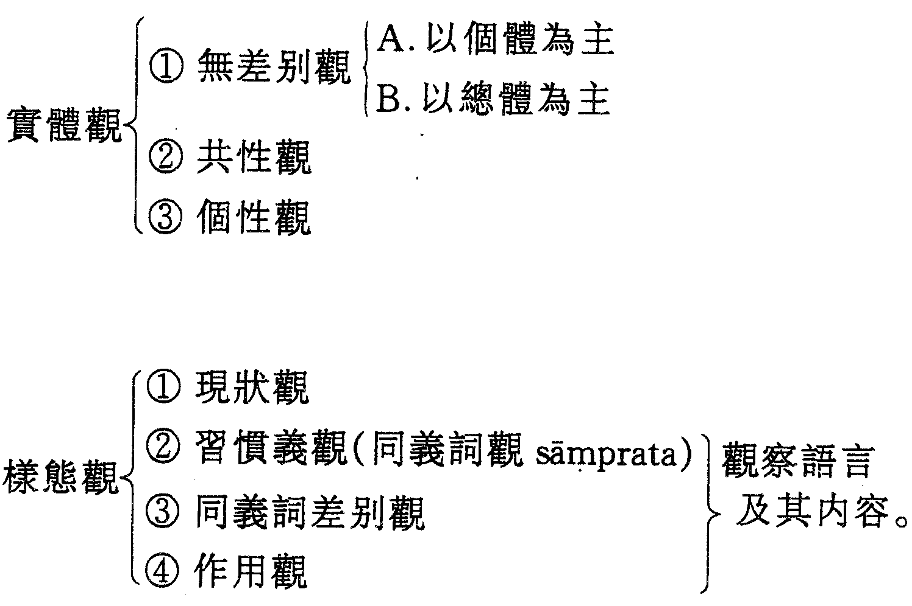
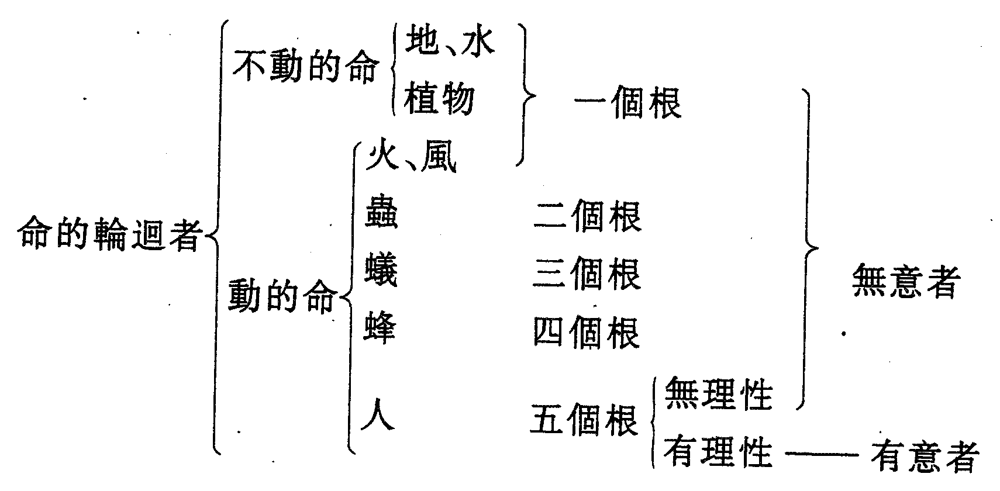
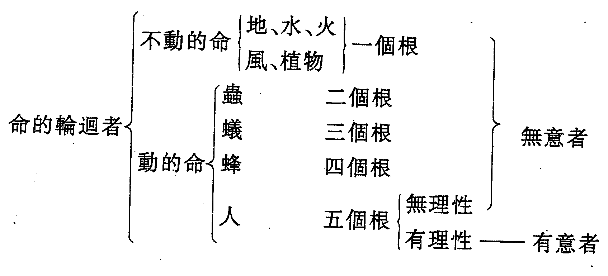
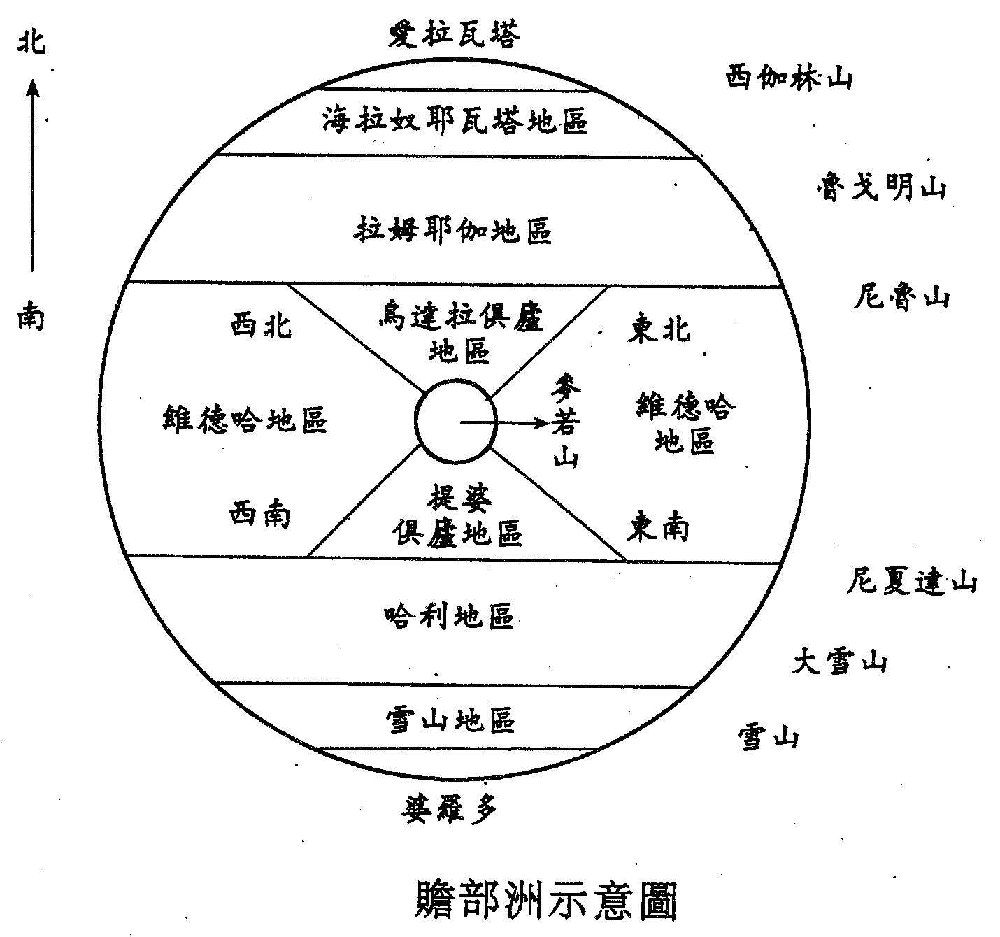
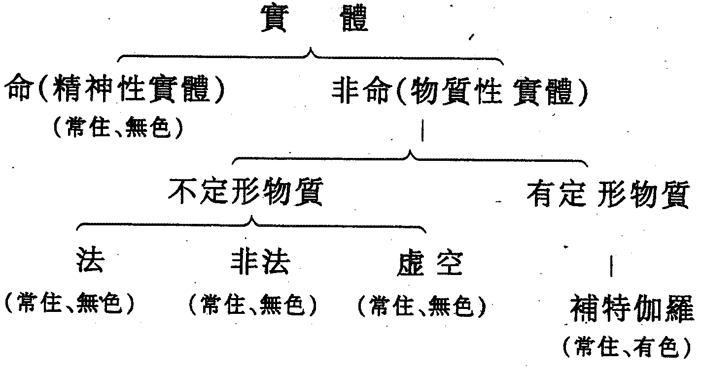

藏外佛教文獻 第02冊
No.21 諦義證得經 (1卷)
【古印度 烏瑪斯伐蒂著 方廣錩譯註】
第 1 卷
諦義證得經
〔題解〕
《諦義證得經》，又名《真理證得經》、《入諦義論》等。印度耆那教經典。該經的梵文原名為Tattvārthādhigama。tattva，意為「原理」、「真理」，漢譯佛經傳統譯為「諦」、「真實義」。該經所謂的「諦」，指耆那教主張的七個基本原理——七諦。artha，意為「義」，即「意義」、「意思」。adhigama，意為「得到」、「知道」、「學習」，漢譯佛經傳統譯為「證得」、「所證」、「入」。該文原題最初無「經（sūtra）」字，但傳統常在其後附上「sūtra」一詞。故在此譯作「諦義證得經」。
《諦義證得經》的作者是著名的耆那教哲學家烏瑪斯伐蒂（Umāsvāti）。烏瑪斯伐蒂的生卒年不詳。耆那教空衣派認為他活動於公元135年至219年，白衣派認為他活動於公元八、九世紀，兩者差距很大。學術界則一般傾向於認為他生活於五世紀。烏瑪斯伐蒂出生於北印度尼耶戈羅迭伽，父名斯伐蒂，母名婆特希（一說名烏瑪）。19歲時依瞿沙難提剎瑪那出家，加入耆那教團。白衣派認為他的導師為牟拉；空衣派認為他的導師是耆那教當時的教團長耿達宮陀。出家後厲修苦行，44歲時接任耆那教教團長。此後領導耆那教教團達40年。84歲時逝世。關於他的生平，白衣派、空衣派的傳說很不一致。據說他一生著作甚豐，共有500部，但現尚傳世的僅五部，其中以《諦義證得經》以及他為這部經典所作的註釋最為重要。
《諦義證得經》共十章，詳細論述了耆那教的基本理論——七諦說。並以此為綱，把耆那教的主要學說大部分都組織進來了。七諦指命、非命、漏、縛、遮、滅、解脫等七個基本原理。耆那教認為，世界萬象由命（精神）與非命（物質）兩大元素組成。命分兩種。一種不受物質的束縛，已經得到了解脫。一種受物質的束縛，遍存於地、水、火、風等四大及各種動物、植物中。非命也分兩種，有定形的與無定形的。有定形的物質由永恆而不可分割的極微（原子）與極微的復合體組成。由於極微與極微的復合體具有種種性狀，從而組成紛繁複雜的現實世界。無定形物質包括時間、空間、法（活動的條件）與非法（靜止的條件），它們是命與有定形物質的活動條件與依據。該經認為，「業」是一種特殊的、細微不可見的物質，它可以漏洩在潛藏在人肉體中的「命」上，這種作用稱為「漏」。由於業有各種不同的種類，所以，漏洩在命上的業可以束縛命，並決定該人的壽夭窮通與生死輪迴，這種作用稱為「縛」。因此，為了得到解脫，首先必須防止業進一步漏洩到命上，這就需要用各種方式把命保護起來，以免業接觸命，這稱為「遮」。進而則必須採用各種方法把已經漏洩到命上的業消除掉，這稱為「滅」。圓滿做到「遮」與「滅」，就可以得到最後的「解脫」。為了得到最後的解脫，耆那教要求教徒必須具足正見、正智、正行等三項條件，這稱為「三寶」，即必須堅定對耆那教理論的信仰採用之指導自己的行動。耆那教還要求人們必須遵守戒律，從事苦行、禁欲等修持，認為由此可以讓命最終擺脫受物質束縛的狀態，抵達不受物質束縛的解脫境地。此外，《諦義證得經》中還論述了耆那教的知識論、宇宙觀等諸方面的內容。
由於歷史的原因，耆那教於公元前三世紀左右分裂為白衣派、空衣派等兩派，沿襲至今。現兩派據為理論依據的經典互不相同，但唯有這部《諦義證得經》為兩派共同尊奉，認為它所論述的確為正統的耆那教教義。在耆那教中，不少人以這部經典作為判斷是非，乃至判斷其他經典真偽的標準，甚至認為將該經讀頌一遍就有莫大的功德。因此，現代的耆那教研究者都把這部經典當作研究耆那教的基本資料，當作闡述耆那教思想的原始資料。
耆那教與佛教產生於同一時代，同一地區。兩個宗教的信徒的社會層面亦大致相同。因此，佛教的思想與耆那教的思想有許多相近之處，這祇要認真閱讀本經就可以明白。佛教把耆那教當作「六師外道」之一，經常在經典中提到它。因此，學習一些耆那教經典，對我們深入學習與研究佛教的理論有極大的補益。譯者認為，從某種意義上說，不瞭解佛教的源——印度佛教，就不能很好地了解它的流——中國佛教。而與印度佛教有密切關係的耆那教典籍，是我們了解與研究印度佛教必不可少的資料。
該經現有英、德、日等多種文字的譯本，本文是該經的第一個漢文譯本。漢譯本先由譯者依據附有梵文原文的日本金倉圓照的日譯本翻譯，進而約請葛維鈞同志依據梵文原文作了校對。現將梵文原文用括弧抄錄在每節經文正文之後，以供有興趣的讀者研究與查考。梵文原文中的「-」為分詞號；「=」為移行號。本經原文非常簡略，以致難以畢讀。為了便於理解，譯者在經文中適當增加一些文字。凡屬譯者增加的文字，一律用括弧標示。另外，為了便於閱讀與研究，譯者參照日譯本及其他耆那教資料，酌量作了一些必要的註釋。
現在耆那教白衣、空衣兩派各有自己的《諦義證得經》的傳承本。兩種刊本的內容基本相同，略有差異。日譯本依據白衣派的刊本翻譯，但將空衣派刊本與白衣派刊本的主要不同之處一一在註釋中予以說明。漢譯本仿照日譯本的辦法處理，主要依據白衣派刊本翻譯，採用小四號楷體印刷。將空衣派刊本的不同內容，放在相關的註釋中，用五號楷體印刷，採用括弧將空衣派刊本的節號括註起來，以示區別。
我國古代大藏經除了收入佛教典籍外，還收入古印度外道勝論派、數論派的典籍如《勝宗十句義論》、《金七十論》等。賡續這一傳統，我們把這部耆那教的基本典籍《諦義證得經》收入《藏外佛教文獻》，供讀者研究參考。
〔正文〕
諦義證得經
第一章
§1.1
正見、智、行就是解脫道。（samyagdarśana-jñāna-cāritrāṇī mokṣa-mārgaḥ.）
〔註釋〕
「見」（Darśana）是印度宗教哲學的常用術語，意為「觀點」、「認識」。它又分為普通人對事物的一般認識和宗教、哲學家對世界、人生的特定學說。如本經§8.8所講的「見的覆障」是指普通人的一般認識；而「正見」（Samyagdarśana）則是指特定的宗教、哲學理論。由於學說不同，印度各宗教哲學派別都把本派的觀點奉為「正見」，而把別派的觀點斥為「邪見」，並把信奉本派學說作為能夠得到解脫的首要條件。如佛教即將「正見」列為「八正道」之首。耆那教所謂的正見是指對耆那教七諦理論的信仰，見§1.2。關於正見的違背，見§7.18。
智（Jñāna）同樣也分世俗的一般智慧與宗教的最高智慧等兩種，這兒指宗教、哲學家主張的智慧，故也有人譯作「正智」。關於耆那教的正智，參見§1.9至§1.33。
行（Cāritra），行動，行為。與見、智一樣，也可分為世俗的與宗教的兩種。這兒指符合耆那教宗教規範的「正行」。參見§9.18。
正見、正智、正行三者，被耆那教稱為「三寶」。他們認為祇有按這三寶的要求去做，纔能得到解脫。所以有的研究者認為本節也可以譯作「應由正見、正智、正行而得解脫之道」。但是，原作者之所以沒有在本節的「智」與「行」前也冠以「正」字，是為了特別強調本經所論述的七諦學說是耆那教教義的精華。因為七諦學說在耆那教理論體系中屬於「正見」的範疇。耆那教認為，觀點指導行動，因此最主要的是樹立「正見」。有了正見，自然會產生相應的正智與正行。
§1.2
正見即對諦義的信仰。（tattvārtha-śraddhānāṃ samyagdarśanam.）
〔註釋〕
諦義，即本經的論述對象，亦即§1.4講的七諦，是耆那教的理論基礎。所以耆那教認為祇有對七諦的信仰纔可以稱為正見。
§1.3
它可自然而然或由證得而產生。（tan nisargād adhigamād vā.）
〔註釋〕
它，指正見。本節論述產生正見的兩種途徑。耆那教認為有的人由於前生的功德，一生下來就具備這種正見，這就是所謂的「自然而然」地產生。而一般的人祇能通過學習，亦即通過「證得」來樹立這種正見。要學習，必須有人教授，因此也有人把此節譯為「它可自然而然或由教授而產生」。《諦義證得經》就是為了這種學習或教授而編纂的。
佛教有「根本智」、「後得智」的說法，與耆那教的這種觀點大體類似。
§1.4
諦即命、非命、漏、縛、遮、滅、解脫。（jīva-ajīva-āsrava-bandha-saṃvara-nirjarā-mokṣās tattvam.）
〔註釋〕
命，梵文原文為Jīva，在我國古代漢譯佛經中一般譯為「命」，近代以來，也有不少人譯為「靈魂」。但耆那教的「命」與現代意義的「靈魂」尚有差異。耆那教的命是一種純粹精神，是世界的基本原理，是萬物含靈的依據，是耆那教哲學的基本範疇之一。為了避免與人們通常理解的「靈魂」相混淆，在此仍譯為「命」。耆那教對命有一系列詳盡的論述，參見第二章至第四章。
非命（ajīva）是與命相對的一種基本原理，也是耆那教哲學的基本範疇。它大體相當於物質和物質存在的條件。詳見第五章。
漏（āsrava）是耆那教基本概念，也是佛教常用的術語。在佛教中，它指漏洩的煩惱。但在耆那教中，漏指業漏洩纏縛命。詳見第六章。
縛（bandha）是束縛的意思，指命被業束縛。詳見第八章。
遮（saṃvara）是阻擋的意思，指阻擋住業，不讓它漏洩到命上。詳見第九章。
滅（nirjarā）是消滅的意思，指消滅已漏洩到命上的業。詳見第九章。
解脫（mokṣa）即從業的束縛中最終解脫出來。印度各宗教哲學派別都把解脫當作自己的最高理想，但對解脫的解釋各不相同。關於耆那教的解脫觀，詳見第十章。
上述七諦，是耆那教的根本理論。另外，有的耆那教經典祇講命、非命兩諦，而把漏、縛、遮、滅、解脫都歸入非命中。也有的經典則將七諦理論中遮、滅兩諦所包含的善（puṇya）、惡（pāpa）單列出來，形成九諦。有些研究者認為上述二諦、九諦的學說，反映了耆那教諦義理論的不同發展階段。這種說法可供參考。
§1.5
按名稱、形態、實體、狀態而決定。（nāma-sthāpanā-dravya-bhāvatas tan-nyāsaḥ.）
〔註釋〕
本節意為每一個諦可以表現為，或被規定為名稱（nāma）、形態（sthāpanā）、實體（dravya）、狀態（bhāva）等四個方面。因此，我們可以通過上述四個方面去認識每一個諦。
例如：命的名稱叫jīva；它表現為生命形態；它具有脫離物質束縛的永恆不變的實體；在不同的情況下，它呈現為不同的狀態。
實體（dravya），又可譯作「缺性的狀態」，指排除了各種屬性之後的狀態。也就是說，耆那教認為，祇有在排除一事物與其他一切事物的所有聯係之後，纔能真正把握該事物的實體。這與印度奧義書中講「梵」、佛教中觀派講「空」時所用的方法有相近之處。
§1.6
由量及觀察法而證得。（pramāṇa-nayairadhigamaḥ.）
〔註釋〕
本節論述證得（學習）諦義的方法，即可以通過量及觀察法這二種方法來證得。
量（pramāṇa）是印度哲學，特別是印度邏輯學——因明——的常用術語，指知識來源、認識方法及判斷知識真偽的標準。耆那教對量的解釋，見§1.10、§1.11。
觀察法（naya）指認識事物的方法。見§1.34、§1.35。
§1.7
（且）通過對定義、所屬、形成的原因、關係、存續、區分；（nirdeśa-svāmitva-sādhana-adhikaraṇa-sthiti-vidhānataḥ.）
§1.8
及存在、數量、場所、接觸、時間、間隔、狀態、大小（的考察）而證得。（sat-saṃkhyā-kṣetra-sparśana-kāla-antara-bhāva-alpabahutvaiś ca.）
〔註釋〕
這兩節意為應按§1.6提出的那兩種方法來觀察這兩節提出的這十四個範疇，纔能證得諦義。推而廣之，也可用這種方法考察一切事物，得到對事物的正確認識。耆那教認為，上述十四個範疇中，§1.7提到的六個範疇是最基本的。以觀察「漏」為例，就必須把握：（1）定義（nirdeśa），即怎樣給它下定義？（2）所屬（svāmitva），它從屬於什麼？（3）形成的原因（sādhana），因何而生？（4）關係（adhikaraṇa），與周圍事物的相互關係？（5）存續（sthiti），存在於哪一段時間內？（6）區分（vidhāna），怎麼分類？而§1.8所講的八個範疇則是根據不同對像、不同情況分別提出的，即所謂「應機而設」。所以，後八個範疇的內容與前六個範疇有所重複。如果以§1.8所提的八個範疇來觀察「正見」，則可知：（1）存在（sat），正見祇存在於部分眾生中，不存在於非眾生中。（2）數量（saṃkhyā），它是無數的。（3）場所（dṣetra），世界各處，它無所不在。（4）接觸面（sparśana），它與世界的無數部分相接觸。（5）時間（kāla），它存在於命的某些特定時間中。（6）間隔（antara），它的存在有一定的間隔，即有時它並不存在。（7）狀態（bhāva），它祇存在於命的一定狀態時。（8）大小（alpabahutva），它有時微弱，有時強大。
§1.9
智慧有感官智、聖典智、直觀智、他心智、完全智。（mati-śruta-avadhi-manaḥparyāya-kevalānijñānam.）
〔註釋〕
感官智（mati）指感覺器官及意識所進行的認識活動及這種活動所得到的知識，亦即一般人通常的認識活動及認識。它包括感覺、推理、記憶等。參見§1.13—§1.19。
聖典智（śruta）指學習聖典與宗教導師的教導的整個學習過程及由此得到的知識。它包括注意、理解、聯想等等。參見§1.20。
直觀智（avadhi），相當於佛教中所說的「天眼通」。據說，雖然這種認識有時還需借助於感官與意識（即感官智），但它具有超越時空的神秘力量，可以直接得到在時間、空間方面都很遙遠的事物的認識。參見§1.21至§1.23。
他心智（manaḥparyāya），即佛教中所說的「他心通」。據說具備這種認識能力的人可以直接洞察他人過去、現在、未來的種種心理活動。耆那教認為，祇有當認識者擺脫一切個人的忿、憎等感情，纔能具有這種神秘的本領。參見§1.24、§1.25。在空衣派的刊本中，他心智的梵文原詞為「manaḥparyaya」。
完全智（kevala），即佛教中所說的「大圓鏡智」。據說這是在認識者的命已經擺脫了業的束縛以後獲得的一種最完善、最全面的認識。它不需任何外界的幫助，不依賴意識與感官，也不受時間、空間的限制，是一種至高無上的智慧。參見§1.30、§10.1。
§1.10
這分作兩種量：（tat pramāṇe.）
§1.11
前兩種是間接的；（ādhye parokṣam.）
§1.12
其它是直接的。（pratyakṣam anyat.）
〔註釋〕
耆那教按照是否需要媒介、工具把感官智等五種智分成直接智慧（aparokṣa）和間接智慧（parokṣa）兩種。所謂直接智慧係指一個已經擺脫了業的影響，並具有「正確」認識能力的「勝者」天生就有或其它人不憑任何媒介、工具，自然就能夠得到的智慧；而間接智慧則是普通人借助於某些媒介、工具纔能得到的。他們認為，感官智要依靠感官、意識、光線等各種條件纔能產生，聖典智要依靠聖典及教授等媒介纔能產生，故都屬間接智慧。所以稱「前兩種是間接的」。而直觀智、他心智、完全智都是命本身在一定狀態下自發得到或天生就有的，故都屬直接智慧。所以稱「其它是直接的」。應該注意的是，印度其它宗教哲學派別一般都將感官智當作現量，即當作可靠的直接智慧，而耆那教卻把它當作間接智慧，剛好相反。耆那教貶斥感官智，是為它要求人們閉目塞聽，反觀自證的宗教修持目的服務的。
§1.13
感官智、念、想、思、覺知等，都是同義詞。（matiḥ smṛtiḥ saṃjñā cintā-abhinibodha ity anarthāntaram.）
〔註釋〕
本節實際上是給感官智下定義，意為感官智包括念（smṛti）、想（saṃjñā）、思（cintā）、覺知（abhinibodha）等諸方面。古印度正理派經典《正理經》§1.1.15的內容與本節相似，可以參見。
§1.14
這（感官智）以根及非根為原因。（tad indriya-anindriya-nimittam.）
〔註釋〕
本節論述感官智依靠什麼而產生。
根（indriya），印度哲學術語，指人體器官，分為知根（感覺器官）與作根（行動器官）兩種。這兒指感覺器官，即眼、耳、鼻、舌、身，又稱五根。見§2.20。
非根（anindriya），指意識。佛教認為意識也有根，常與眼等五根合稱「六根」。耆那教認為意識不屬根，故稱「非根」。但耆那教與佛教一樣，認為感官智必須依靠外在的五根與內在的意識纔能產生。
§1.15
漠然的感覺、認識的欲望、判斷及記憶（是感官智形成的步驟）。（avagraha-īhā-apāya-dhāraṇāḥ.）
〔註釋〕
這一節論述感官智依照怎樣的認識過程形成。以對一面旗的認識為例：首先是被動地感覺到有那麼一個紅色的東西，這就是所謂「漠然的感覺」（avagraha）；隨即產生一個想明瞭它到底是什麼東西的願望，即「認識的欲望」（īhā）；接著根據它飄動的情況斷定它是一面旗，這為「判斷」（apāya）；然後又確定它與過去自己曾見過的旗是同樣的旗，這是「記憶」（dhāraṇa）。這裡講的是一個認識形成的四個步驟，耆那教認為這也是感官智的四種功能。
§1.16
（可認識）多數、多種、迅速、不顯現、非言詮、恆常及其反面。（bahu-bahuvidha-kṣipra-aniḥsṛta-anukta-dhruvānāṃ setarāṇām.）
〔註釋〕
本節論述感官智的認識對象。即它可以認識「多數」（bahu）、「多種」（bahuvidha）、「迅速」（kṣipra）、「不顯現，」（aniḥsṛta）、「非言詮」（anukta）、「恆常」（dhruva）等六種範疇及與上述六種範疇相反的少數、少種、緩慢、顯現、言詮、變化等六種範疇。也就是說，感官智可以認識事物的數量，事物的種類，事物的速度，可以認識明顯的或隱藏的事物，可以認識能用語言來表達或不能用語言來表達的事物，可以認識永恆不變或變化無常的事物。
§1.17
（這是就明確的）對像（而言）。（arthasya.）
§1.18
對於不明確的（對象，祇有）感覺（與之相關）。（vyañjanasya-avagrahaḥ.）
§1.19
（但此時）要除去眼根與非根。（na cakṣur-anindriyābhyām.）
〔註釋〕
§1.14至§1.16雖然論述了感官智憑籍什麼而產生，它的四種機能及認識對象。但耆那教認為上述這些都是對明確的對象而談的。而對於那些不太確定的對象，如遠處傳來的模模糊糊的聲音，則祇有「漠然的感覺」這一種機能在起作用。並且，由於眼識與非根（即意識）永遠祇在認識明確的對象時起作用，而在認識那些不太確定的對象時不起作用，故此時要除去眼識與非根。
§1.20
聖典智在感官智之後。（可分為）兩類：多數（及）十二種。（śrutam mati-pūrvaṃ dvy-aneka-dvadāśa-bhedam.）
〔註釋〕
本節論述聖典智。耆那教認為聖典智必須依感官智為基礎，通過感官智得到。故稱「在感官智之後」。聖典智分為兩類：肢及肢外。肢（Aṅga），指耆那教的基本經典《十二肢》；肢外，指十二肢以外的其它經典。肢外的經典很多，故稱「多數」；肢祇有十二部，故稱「十二」。
§1.21
直觀智有兩種。（dvividho 'vadhiḥ.）
§1.22
對於住在地獄者及諸天，它是與生俱有的。（bhava-pratyayo nāraka-devānām.）
§1.23
對於其它，它由上述原因而生。（但此時它又）分成六種。（yathokta-nimittaḥ ṣaḍ-vikalpaḥ śeṣānām.）
〔註釋〕
這三節論述直觀智。
耆那教把一切眾生分成四類：天（devā，與佛教之「天」完全相同）、人、傍生（即畜生）、地獄住者（即鬼），見§2.6。故§1.23所謂的「其它」，指人及傍生。所謂「上述原因」，據作者原註是指「抑止及滅盡產生智障的業」。關於抑止、滅盡業的問題，請參見第九章、第十章。
這三節意為，直觀智可分為兩種，對於天及鬼來講，它是生與俱來，先天就有的。對於人類及畜生來說，它是在抑止、滅盡了產生智障的業之後產生的。而人類與畜生所具有的後一種直觀智又可以因場所的變更而分為六種不同的情況，它們是：因場所的變更而（1）消滅者；（2）不消滅者；（3）逐漸減少者；（4）逐漸增大者；（5）又減少、又增大者；（6）不變者。
空衣派的刊本將§1.21與§1.22兩節合為一節，作「住地獄者及諸天的直觀智是與生俱有的。」（bhavapratyayo 'vadhir devā-nārakāṇām.）
§1.24
他心智分（單純）直覺和廣泛直覺。（ṛju-vipulamatī manaḥparyāyaḥ.）
〔註釋〕
本節及下一節論述他心智。
單純直覺（ṛjumati）指立刻能直接覺知他人心中現在正在想什麼的他心通功能；廣泛直覺（vipulamati）指連別人心中的複雜思維，即過去曾有過的、未來將會有的思維都能察知的他心通功能。
§1.25
其差別則根據清淨及不壞。（viśuddhy-apratipātābhyām tad-viśeṣaḥ.）
〔註釋〕
耆那教認為廣泛直覺比單純直覺更高一等。即它比較清淨；且具有永久性，一旦得到後，再不會喪失，所以稱為「不壞」。
§1.26
根據清靜、範圍、所有者、對境（的不同，來區別）直觀智和他心智。（viśuddhi-kṣetra-svāmi-viṣayebhyo 'vadhi-manaḥparyāyayoḥ.）
〔註釋〕
本節論述直觀智與他心智的差別。
耆那教認為他心智比直觀智：（1）更加清靜（viśuddhi）；（2）作用範圍（kṣetra）更大；（3）一切眾生都可能有直觀智，但祇有聖者纔能具備他心智，即所有者（svāmi）不同；（4）直觀智的對象是粗大的物質世界，而他心智的對象是精微的精神世界，即對境（viṣaya）不同。
§1.27
與感官智及聖典智相關的（對境）在於一切實體，（而）不在於一切樣態。（mati-śrutayor nibandhaḥ sarva-dravyeṣv asarva-paryāyeṣu.）
〔註釋〕
本節意為感官智及聖典智可以認識一切實體，但它們未必能認識一切樣態。
在空衣派刊本中，本節缺「一切實體」之「一切」（sarva）一詞。
§1.28
（而）與直觀智相關的（對境）在於諸色（之中）。（rūpiṣv avadheḥ.）
〔註釋〕
色（rūpa），一般指物質性的具體事物，與「名」（nāma，精神性本原）相對，是印度哲學的重要範疇。
本節意為直觀智雖然可以超越時空去認識事物，但它所認識的對象，仍然是具體的物質性的事物。
§1.29
與他心智相關的（對境，還）在於它的無限部分。（tad-anantabhāge manaḥparyāyasya.）
〔註釋〕
「它」指直觀智認識的對象。據作者原註，本節意為他心智能夠認識直觀智所能認識的一切對象。不僅如此，它還能認識人的一切思維。另一種解釋說，「無限部分」是指該認識對象的「細微的形式」。
§1.30
與完全智相關的（對境），在於一切實體及樣態。（sarva-dravya-paryāyeṣu kevalasya.）
〔註釋〕
本節論述完全智的認識對象。由於完全智最圓滿、最完善，所以它以一切實體、一切樣態作為自己的認識對象。
關於完全智，還可參見第十章關於解脫者的論述。
§1.31
在一（命）中同時有從一（智）到四（智）的區分。（ekādīni bhājyāni yugapad ekasminn ā caturbhyaḥ.）
〔註釋〕
前面§1.27至§1.30論述了五種智的認識對象。本節論述五種智以怎樣的方式存在於某一生命體中。耆那教認為，這五種智不能同時存在於某一個生命體中。每個生命體可以祇有一種智，此時為完全智；可以同時有兩種智，此時為感官智與聖典智；可以同時有三種智，此時為感官智、聖典智與直觀智或感官智、聖典智與他心智；可以同時有四種智，即除了完全智之外的其它四種智。雖然幾種智可以同時並存在一個生命體中，但在某一特定時刻，祇能由一種智活動。此外，耆那教認為除了完全智外，其它四種智都不是常恆永存的。
§1.32
感官智、聖典智、直觀智還有顛倒。（mati-śruta-avadhayo viparyayaś ca.）
§1.33
（這種顛倒）因把有與非有等同視之或象狂人那樣自恣感受而產生。（sad-asator aviśeṣād yadṛccha-upalabdher unmattavat.）
〔註釋〕
顛倒，指謬誤，就如把馬顛倒認識為牛那樣。
這二節意為感官智等三種智慧並非永遠正確，在不正常的情況下也會產生謬誤。產生謬誤的原因在於不能正確區別世界上諸種事物的存在（有）與不存在（非有），把它們等同起來了。或象精神病患者那樣，不能正常地認識、看待世界。
§1.34
觀察法有無差別觀、共性觀、個性觀、現狀觀、習慣義觀（等五種）。（naigama-saṃgraha-vyavahāra-ṛjusūtra-śabdā nayāḥ.）
〔註釋〕
本節與下節解釋§1.6中提到的觀察法。
無差別觀（naigama），作者在原註中解釋說：「當我們講瓶時，我們是指按照作瓶者的意圖而作出的，上部為環狀，口長頸圓，下部成球狀，有運水、蓄水作用的，被燒製成種種色彩的那麼一種特殊的實體。而毫無差別地看待這一個特殊體（即某一個特定的瓶）或所有這一切種類（即所有的瓶），即是naigama。」亦即無差別地等觀個別與一般，或從個別事物中攝取它與其它事物的共性而拋棄其個性的觀察法。
共性觀（saṃgraha），作者在原註中說：「指由名稱等而突出出來的關於現在、過去、將來的瓶子的一般性理解。」即不看個性，祇看共性的觀察法。至於無差別觀與共性觀的區別，有的研究者認為前者是指從個別到一般的動態觀察法，後者是對共性（一般）的靜態觀察法。有的研究者認為前者是從空間來講的，後者是從時間來講的。
個性觀（vyavahāra），即注重考察事物個性的觀察法。
現狀觀（ṛjusūtra），作者在原註中說：指「善於對現在存在的對象作正面的解釋。」又說：「如掌握現狀觀，則應能簡單知道對現在的對境的把握。」故現狀觀係指對現存事物現狀的觀察及表述。
習慣義觀（śabda），作者在原註中說：指「反映了名稱中的既定觀念的詞彙與它的內容間的表象。」研究者認為，所謂習慣義觀是從語言方面來講的，指觀察人們賦於某一詞彙的習慣含義，並了解以一些同義詞來表述一定的事物。
在空衣派的刊本中，本節還包括同義詞差別觀、作用觀兩種，共為七種觀察法。
同義詞差別觀（samabhirūḍha），指按通常的語源來觀察同義詞的差別。
作用觀（evaṃbhūta），作者在原註中的解釋非常簡略，難於理解。研究者一般認為作用觀指當用某一詞彙表述事物時，觀察該詞彙從語源上講，有無特定的作用。
按耆那教的觀點，上述七種觀察法可分為兩大類：實體觀，樣態觀。圖示如下：

§1.35
（其中）第一個與習慣義觀（可分別）分為二種及三種。（ābya-śabdau dvi-tri-bhedau.）
〔註釋〕
「第一個」，指五種觀察法中的第一個無差別觀。如§1.34註解圖示，無差別觀可分成以個體為主及以總體為主兩種。而習慣義觀可分成習慣義觀、同義詞差別觀及作用觀三種。故白衣派刊本之所以在§1.34中未提同義詞差別觀與作用觀這兩種觀察法，是因為已經把它們包括在習慣義觀中了。
第二章
§2.1
命的真實狀態可分業的抑制狀態、業的滅盡狀態、混合狀態、業的活動狀態及自然狀態。（aupaśamika-kṣāyikau bhāvau miśraś ca jīvasya svatattvam auadyika-pāriṇāmikau ca.）
〔註釋〕
耆那教認為命依據它與行為的結果——業——的結合情況不同而處於各種不同的狀態中。一般分如下五種。
（1）業的抑制狀態（aupaśamika）：此時，纏繞命的業處於不活動的靜止狀態。
（2）業的滅盡狀態（kṣāyika）：此時，業已被消滅。
（3）混合狀態（miśra）：即此時業的抑制狀態與業的滅盡狀態正相互混合，亦即處在業正趨向於滅盡的狀態。此時亦稱：kṣāyopaśamika。
（4）業的活動狀態（auadyika）：此時業正處於積極活動的狀態。
（5）自然狀態（pāriṇāmika）：此時的命與業沒有任何關聯，即命顯現、回歸其本源狀態。
§2.2
順次有二種、九種、十八種、二十一種、三種的區別。（dvi-nava-aṣṭādaśa-ekaviṃśati-tri-bhedā-yathākramam.）
〔註釋〕
本節意為命的上述五種狀態，每種還可細分為若干種情況。即：業的抑制狀態可分為二種，業的滅盡狀態可分成九種等等。從§2.3至§2.7即詳論命的這五種狀態的分類。
§2.3
（在業的抑制狀態可分為）正與行（兩種）。（samyaktva-cāritre.）
〔註釋〕
「正」即「正智」。「行」即「正行」。
本節意為，業如果被抑制，則精神上就可以顯現正智、正行。有的研究者認為，「正」包括「正見」、「正智」。所以，業如果能被抑制，則正見、正智、正行三寶俱可顯現。
§2.4
（在業的滅盡狀態再加上）智、見、施與、利得、受用、皆用、精進。（jñāna-darśana-dāna-lābha-bhoga-upabhoga-vīryāṇi ca.）
〔註釋〕
前一節的「正」、「行」再加上本節的「智」等七種，即為九種業的滅盡狀態。
智，即正智。本節中的正智與前一節中的「正智」不同。前一節的「正智」是指業被抑制後，剛開始逐漸顯現的正智，而這兒的正智是指業滅盡後呈現出的完美狀態的正智。
見，指正見。有些註釋者認為上一節中的「正」已包括了正見。他們認為上一節所講的正見指業被抑制後，剛開始逐漸顯現的正見；本節所講的正見則是指業滅盡後顯現出的完美狀態的正見。
施與（dāna）：這裡是指把「無畏」施與人，使人勇敢不懼。亦即佛教中所謂的「施無畏」。
利得（lābha）：因業滅盡而得完全智的人即使不吃飯也能生存，因在其身體中有一種能同化外界物質而為己用的力量。相當於中國所說的「辟穀」。也可簡單地解釋為可得到無限的利益。
受用（bhoga）：能得到天雨花之類的供養。
皆用（upabhoga）：能隨意幻生寶座、天蓋等物並享用它們。
精進（vīrya）：在佛教中，此詞意為不斷地努力。但在耆那教中，此處意為無限的力量。
§2.5
（在業的抑制與滅盡的混合狀態可分）四種智、三種無智、三種見、五種得、正、行、禁戒與無禁戒（等十八種）。（jñāna-ajñāna-darśana-（dānādi）-labdhayaś catus-tri-tri-pañca-bhedāḥ samyaktva-cāritra-saṃyamāsaṃyamāś ca.）
〔註釋〕
四種智，指§1.9提到的五種智中的前四種。
三種無智，指§1.32提到的處於謬誤狀態的感官智、聖典智、直觀智。
三種見，指眼見、非眼見、直觀智見。所謂「眼見」，指以眼識為媒介而產生的表象；所謂「非眼見」，指由眼識以外的其它五識為媒介而產生的觀念。所謂「直觀智見」指由直觀智產生的信念。
五種得，即前一節中所講的施與、利得、受用、皆用、精進。但人在業的抑制與滅盡的混合狀態所具有的這五種得，要比人在業的滅盡狀態所具有的這五種得能力要差一些。
正、行，同§2.3。但此時的正、行不如前者純粹。
禁戒與無禁戒，意為應遵守部分戒律。禁戒（saṃyama），原義為自我控制或感官控制，轉化為有關控制自我及感官的戒律。可參見第七章。
§2.6
（在業的活動狀態，則分）四趣、四濁、三相、一邪見、一無智、一無禁戒、一不成之性及六彩（等二十一種）。（gati-kaṣāya-liṅga-mithyādarśana-ajñāna-asaṃyata-asiddhatva-leśyāś catuś-catus-try-eka-eka-eka-eka-ṣad-bhedāḥ.）
〔註釋〕
「四趣」（gati），指地獄、傍生（畜生）、人、天等眾生輪迴的四個處所。可與奧義書中說的三道及佛教說的六道相參照。
「四濁」（kaṣāya），指忿、慢、欺、貪等四種感情。
「三相」（liṅga），指陽性、陰性、中性等三種性別。
「邪見」（mithyādarśana），指錯誤的觀點或信仰。
「無智」（ajñāna），指沒有智慧。
「無禁戒」（asaṃyata），指不守禁戒。
「不成之性」（asīddhatva），空衣派刊本作「不成」（asiddha），指不能圓滿完成，不能解脫。
「六彩」（leśya），指可根據道德的高下，把人分成六種不同的類型。
§2.7
（在本然狀態則分）命性、可能性及不可能性等。（jīva-bhavya-abhavyatvā-dīni ca.）
〔註釋〕
「命性」（jīvatva），在此指具有「活力」、「活性」、「精神性」、「靈性」。
「可能性」（bhavyatva），指可能得到解脫的性質。
「不可能性」（abhavyatva），指不可能解脫的性質。
本節意為生命具有這麼三種基本性質。關於「不可能性」，可與佛教所謂「斷絕善根」的說法相參照。
在空衣派的刊本中，無最後的「等」字。但據作者原註，這兒的「等」還包括有「存在性」、「個別性」、「作者性」等意義。
§2.8
（命的）特徵是意向性。（upayogo lakṣaṇam.）
〔註釋〕
本節及下一節論述命的特徵。
意向性（upayoga），是耆那教的專門術語，指在生命現象中存在著的廣義的精神作用。它表現為針對某個目標而產生的精神活動，很難確切翻譯。可參見§2.9、§2.19。
§2.9
（此中有）兩種，（且分別）有八種、四種之區別。（sa dvividho 'ṣṭa-catur-bhedaḥ.）
〔註釋〕
意向性可分成兩種：一、關於「智」的意向性；二、關於「見」的意向性。關於「智」的意向性可分八種，即§1.9提到的五種正智及§1.32提到的三種顛倒智。關於「見」的意向性可分四種：眼見、非眼見、直觀智見、完全智見。參見§2.5。
§2.10
（命分為二種：）輪迴者與解脫者。（saṃsāriṇo muktāś ca.）
〔註釋〕
耆那教的命可總括為解脫者與輪迴者兩種。所謂解脫者，即已經從業的束縛中解脫出來的命。可參見第十章的有關論述。所謂輪迴者，即正在輪迴中的命。從下一節開始到§2.52，綜述了輪迴中的命的一般情況。第三、第四章又分別論述了在地獄、地面、天界等三界中輪迴著的命的情況。
§2.11
（輪迴者）分為有意者與無意者。（samanaska-amanaskāḥ.）
〔註釋〕
意（manas），指意識。有意者指具有意識、理性、判斷力者。無意者指不具有意識、理性、判斷力者。
§2.12
輪迴者（並）可分為動者與不動者。（saṃsārinas trasa-sthāvarāḥ.）
§2.13
不動者為地、水、植物。（pṛthivy-ab-vanaspatayaḥ sthāvarāḥ.）
§2.14
動者為火、風及具有二個以上根者。（tejo-vāyu dvīndriyādayaś ca trasāḥ.）
〔註釋〕
根（indriya），即感官。關於根的詳細論述可見§2.15至§2.22。耆那教用根的多少作為對生物分類的標準。詳見§2.23至§2.24。
耆那教認為植物，乃至地、水、火、風中都寓有「命」，都是「生物」，這種物活論的思想，是值得注意的。
在空衣派的刊本中，§2.13、§2.14兩節略有不同：
（§2.13）不動者為地、水、火、風、植物。（pṛthivy-ab-tejo-vāyu-vanaspatayaḥ sthāvarāḥ.）
（§2.14）動者為具有兩個以上根者。（dvīndriyādayastrasāḥ.）
即，空衣派把火、風都歸入不動者的範疇。
§2.15
根有五種。（pañca-indriyāṇi.）
〔註釋〕
參見§2.20。
§2.16
（可分）兩類。（dvi-vidhāni.）
§2.17
根自體與輔助根為實體根。（nirvṛtty-upakaraṇe dravyendriyam.）
§2.18
（功能的）獲得與意向性為作用根。（labdhy-upayogau bhāvendriyam.）
〔註釋〕
從§2.15到本節講根的結構方式。耆那教從體、用兩個方面去考察根，認為根可分成實體根和作用根。這種思維方式值得注意。以眼根為例，耆那教認為瞳孔是根自體、眼瞼等是輔助根，兩者均有實體，稱為實體根。眼睛具備一種可以看見外物的能力，這種能力使眼睛看到外物，這就是功能的獲得。為了看某一事物而顯現出的精神活動則屬意向性。後兩者均沒有實體，稱為作用根。
按照耆那教哲學的一般觀念，根屬於色法，即為物質性的存在。而本節所講的「功能的獲得」與「意向性」實際都是精神性活動。但耆那教認為這些精神性活動也都是根，屬於色法，這是值得注意的。佛教也有類似的觀點。
§2.19
意向性存在於觸覺等中。（upayogaḥ sparśādiṣu.）
〔註釋〕
這一節的內容與上下文不甚連貫。空衣派刊本無此節，而以下一節為自己的§2.19節。故從§2.19起，空衣、白衣兩派的刊本的編號逐次差一節，直至§2.49至。
§2.20
身、舌、鼻、眼、耳（為五根）。（sparśana-rasana-ghrāṇa-cakṣuḥ-śrotrāṇi.）
§2.21
它們的對象是觸、味、香、色、聲。（sparśa-rasa-gandha-varṇa-śabdās teṣām arthāḥ.）
〔註釋〕
這兩節論述根的分類及認識對象。由於把根分作身、舌、鼻、眼、耳是印度比較普遍的方法，故本經對此未作詳論。
§2.22
非根（的對象）是聖典智。（śrutam anindriyasya.）
〔註釋〕
非根，即意，見§1.14、§1.19。因為聖典智的概念祇有意識纔能理解、把握，故它是非根的對象。但同時必須注意§1.20所述：聖典智必須以感官智為基礎。即，非根必須在根的幫助下纔能認識聖典智，而不能單槍匹馬去進行認識活動。
§2.23
直至風的諸（生物）有一個根。（vāyu-antānām ekam.）
〔註釋〕
此節意為從地到風，即地、水、植物、火、風等五類東西都是具備一個根的生物。這裡所謂的「直至風」，是指§2.13、§2.14兩節所排列的次序。耆那教認為這些生物具備的那個根是「身」，或稱「皮」，即具備觸覺。
空衣派的刊本此節為：「直至植物的（生物）有一個根。」（vanaspaty-antānām ekam.）這兒所謂的「直至植物」，是按照空衣派刊本的排列次序來講的，故也同樣是說地、水、火、風、植物等五類東西具備觸覺。兩者表述方式雖不同，理論內容是一致的。參見§2.13、§2.14。
§2.24
蟲類、蟻類、蜂類、人類等，依次增加（一個根）。（kṛmi-pipīlikā-bhramara-manuṣya-ādīnām ekaika-vṛddhāni.）
〔註釋〕
耆那教認為蟲類有兩個根：皮、舌；蟻類有三個根：皮、鼻、舌；蜂類有四個根：皮、舌、鼻、眼；而人類五根齊備：皮、舌、鼻、眼、耳。
§2.25
（祇有）有理性者有意識。（saṃjñinaḥ samanaskāḥ.）
〔註釋〕
耆那教認為有些人具備各種正常的精神活動、思維功能，這些人是有理性者。而另一些人，如瘋子沒有正常的精神活動、思維功能，是無理性者。祇有有理性者纔有意識，無理性者沒有意識。
現把白衣派、空衣派關於命的輪迴者的生物分類圖示如下：

上為白衣派的分類

上為空衣派的分類
§2.26
在趣的分離處，有業身在活動。（vigraha-gatau karma-yogaḥ.）
〔註釋〕
「趣」，即四趣。「趣的分離處」，即一個趣與另一個趣的結合部，或從一個趣到另一個趣的轉折處。「業身」，此處原文為「業」（karma），但實際指業身（kārmaṇaśarīra）。關於「業身」，可參見§2.37至§2.49的有關內容。
本節意為，生物死後，在命從一個趣趨向另一個趣的輪迴過程中，祇有業身作為聯係前後生的主體在活動，在起作用，在推進這一過程。
§2.27
運動是沿直線（進行）的。（anuśreṇi gatiḥ.）
〔註釋〕
從本節到§2.31論述命的運動方式、所需時間及命的營養物等問題。
本節指命沿直線運動，不能繞曲線行進。
§2.28
（解脫的）命的（運動）不曲折。（avigrahā jīvasya.）
§2.29
而輪迴（著的命）有少於四次的（方向上的）曲折。（vigrahavatī ca saṃsāriṇaḥ prāk-caturbhyaḥ.）
〔註釋〕
命在運動時，必須沿直線前進，不能繞曲線。正在輪迴的命為了改變運動的方向以進入新的趣，可以在某一點曲折，但曲折後仍必須沿直線前進，且這種曲折不能超過三次。解脫了輪迴的命不會有曲折，它直線昇入天穹。
§2.30
不曲折（祇）要一瞬間。（eka-samayo 'vigrahaḥ.）
〔註釋〕
耆那教認為命從一點到另一點，祇要是直線前進，則無論距離有多遠，都祇需一瞬間（samaya）。所以，一瞬間就是命從一點直線運動到另一點所需的時間。如果命在運動中發生曲折，則立即進入另一瞬間。因此，由於解脫的命不曲折，故祇需一瞬間，就可以直線上昇到天穹。輪迴的命最多曲折三次，因此它最遲在第四瞬間進入新的趣，得到新的身體與生命形態。
§2.31
一（瞬間）、二（瞬間）、（三瞬間）時，（命）不攝取。（ekaṃ dvau 〔trīn〕 vā anāhārakaḥ.）
〔註釋〕
由於此時的命正在為進入新趣而運動，本身沒有肉體，故它不需攝取其它物質作自己的營養物。
白衣派刊本無「三瞬間」一詞，據空衣派刊本補。
§2.32
（命的出生形式）有凝集生、胎生、化生（三種）。（saṃmūrchana-garbha-upapātā janma.）
〔註釋〕
命本身是無始無終的，它既不會被產生，也不會被消滅。但是，由於業力作用，它可以輪迴於四趣。本節至§2.35論述命在輪迴的過程中以怎樣的形式出生到某一趣。
耆那教主張的凝集生、胎生、化生與婆羅門教主張的卵生、胎生、濕生、芽生；佛教主張的卵生、胎生、濕生、化生可相參照。
§2.33
其出生的場所分別為諸有生命處、冷處、覆處、與其相反處及混合處。（sacitta-śīta-saṃvṛttāḥ setarā miśrāś ca-ekaśas tad-yonayaḥ.）
〔註釋〕
生於「冷處」，指某些生物嗜冷，生於寒冷的地方。
生於「覆處」，指陰暗的地方，如某些生於腐敗樹葉堆中的菌類等。
生於「與其相反處」，指與上述三處相反的地方。即非生命處，如桌子中的蛀蟲；暖處；明處。
生於「混合處」，指有生命無生命的混合處，冷暖並存處，明覆相兼處等。
§2.34
胎生是胞衣生、卵生和無膜生。（jarāyu-aṇḍa-potajānāṃ garbhaḥ.）
〔註釋〕
胞衣生（jarāyu），該詞在佛教中譯為胎生，指哺乳動物的產育方式。但在耆那教中指出生時幼體外有胞衣，故與佛教的胎生還有所不同。
卵生（aṇḍa），指由卵孵化而生。
無膜生（potaja），耆那教認為獅子等野獸雖是胎生，但幼崽出生時外無胞衣，故稱無膜生。
在空衣派的刊本中，本節作「jarāyuja-aṇḍaja-potānāṃ garbhaḥ.」意義相同。
§2.35
化生是地獄與天。（nāraka-devānām upapātaḥ.）
〔註釋〕
化生（upapāta），指不需要任何母體，突然幻現的生命產生形式。據說生活在地獄及天界的命都是以這種形式產生的。
在空衣派的刊本中，本節作「deva-nārakāṇām upapātaḥ.」意義相同。
§2.36
其餘是凝集生。（śeṣānāṃ saṃmūrchanam.）
〔註釋〕
「凝集生」（saṃmūrchana），類似於佛教的濕生，即濕氣凝集而生，如蚊蚋等。
§2.37
（另外，身體有）粗大身、可變身、取得身、光亮身、業身（等五種）。（audārika vaikriya-āhāraka-taijasa-kārmaṇāni śarīrāṇi.）
〔註釋〕
本節至§2.49論述命在輪迴時，在各趣各具有什麼樣的身體形態。
「粗大身」（audārika），指通常所謂的肉體。
「可變身」（vaikriya），指在天界、地獄中的鬼、神所具有的，可以任意幻化的身體。
「取得身」（āhāraka），聖人產生疑問時，可由頭頂產生取得身，該身可雲遊各處，取得正智。
「光亮身」（taijasa），由火原子構成。在一般人處，它表現為可消化食物的熱力；而在苦行者處，它可作為一種能燒毀他物的力量而顯現出來。
「業身」（kārmaṇa），由物質性的業構成，起輪迴主體的作用。
§2.38
（此五身）後面的更細微一些。（〔teṣāṃ〕 paraṃ paraṃ sūkṣmam.）
〔註釋〕
本節意為組成這五身的物質，愈往後愈細微。後兩節即具體解釋本節。
§2.39
光亮身以前（的各身所擁有的）微點，（後者依次比前多）無數倍。（pradeśato 'saṃkhyeya-guṇaṃ prāk taijasāt.）
〔註釋〕
「光亮身以前的各身」，指粗大身、可變身、取得身三種。「微點」（pradeśa），這是耆那教特有的術語，指物質性的原子。原子可以相互結合成複合體，複合體的質料要粗於原子。
§2.40
其它的具有的微點，依次是（前者的）無數倍。（ananta-guṇe pare.）
〔註釋〕
「其它的」，指光亮身、業身。
§2.39、§2.40兩節意為，由於組成肉體身等五身的物質，逐漸由原子的複合體分解為更細小的原子（微點），所以它微點的數目愈來愈多，從而組成身體的物質也就愈來愈細微。
§2.41
（最後兩身活動時），不受任何障礙。（apratighāte.）
〔註釋〕
前三個身由於質料粗，在活動時可能會被其它物體阻擋。如牆壁可以擋住肉體身等。但光亮身、業身的質料極其細微，像小砂粒穿透篩子一樣，沒有任何東西可以阻擋它們的活動。佛教也有類似的說法。
§2.42
且無始以來即（與命）相結合。（anādi-saṃbandhe ca.）
§2.43
（故光亮身及業身）存在於一切（生物）之中。（sarvasya.）
〔註釋〕
耆那教認為一個命祇要墮入輪迴，光亮身、業身就開始與它結合。祇要命繼續輪迴下去，這種結合是不會解脫的。故此說這二身存在於一切輪迴著的生物之中。
§2.44
一個（命）以這（二個身）為開始，直到同時享有四個身。（tad-ādīni bhājyāni yugapad ekasya ā caturbhyaḥ.）
〔註釋〕
耆那教認為與光亮身及業身結合的命在輪迴中不斷運動，便逐漸取得其它身。但是，一個命不可能同時兼有可變身與取得身，因此，它最多祇能同時具有四個身。
§2.45
最後之身不享受（苦樂）。（nirupabhogam antyam.）
〔註釋〕
「最後之身」，即業身。
§2.46
最初的由胎生（或）凝集生（產生）。（garbha-saṃmūrchana-jam ādyam.）
〔註釋〕
「最初的」，指粗大身。
§2.47
可變身由化生（產生）。（vaikriyam aupapātikam.）
〔註釋〕
在空衣派的刊本中，本節作「aupapātikaṃ vaikriyikam」。
§2.48
（但）因（苦行功德的）獲得力也可（得到可變身）。（labdhi-pratyayaṃ ca.）
〔註釋〕
§2.47講的由化生產生的可變身是指在天界、地獄中的神、鬼所具有的，可任意變化的身體。§2.48講的可變身則是指積累特殊的苦行，因其功德而在現在這個世界中得到的，可以隨意神通變化的身體。
空衣派的刊本中此節為§2.47，（參見§2.19註釋），並另有§2.48如下：
（§2.48）光亮身亦然。（taijasam api.）
即，聖者可通過特殊的苦行而獲得光亮身，這種光亮身可用來救厄度災，亦可用來燒盡怨敵。
白衣派刊本無此節。故從§2.49起，兩種刊本的編號仍相一致。
§2.49
取得身祇存在於能默記十四前的（高僧）。（此身）吉祥、潔白，（且任何東西都）不能妨礙（此身的活動）。（śubhaṃ viśuddham avyāghāti cā 'hārakaṃ caturdaśa-pūrva-dharasyai'va.）
〔註釋〕
十四前（caturdaśapūrva），是耆那教經典十二肢中的最後一肢。據說，這是由大雄親口傳述的，是所有耆那教經典中最重要的一部。據耆那教傳說，約在公元前三百年左右，比哈爾一帶的耆那教徒曾在濕陀羅薄陀羅（sthūlabhadra）的主持下進行了一次結集（會誦經典）。當時，十二肢中的其它十一肢都會誦出來，但沒有人能正確、完整地誦出最後一肢——十四前。於是，他們便邀請當時正在尼泊爾山中修苦行的濕陀羅薄陀羅的教師薄陀羅婆睺（bhadrabāhu）前來傳授該經，但被薄陀羅婆睺拒絕。後薄陀羅婆睺把濕陀羅薄陀羅召到自己的住處，向他秘密傳授了這十四前，同時嚴禁他將最後四前外傳他人。再後來，連前十前也無人知曉了，這一肢便完全失傳。
空衣派刊本無「能默記十四前的高僧」等詞，代之以「達到修道的第六個階位、尚未（最後）完成的聖者。」（pramatta saṃyata.）
§2.50
住地獄者及凝集生者無（男女）性別。（nāraka-saṃmūrchino napuṃsakāni.）
〔註釋〕
本節及下一節論述四趣中各類生物的性別。
§2.51
諸天則不然。（na devāḥ.）
〔註釋〕
即諸天神有男女性區別。
在空衣派刊本中，還有這麼一節：
（§2.52）其餘的有三性。（śeṣās tri-vedāḥ.）
即，胎生的有男、女、中性的區別。但白衣派刊本無此節。
§2.52
化生者、最後身者、最勝者、有無數量年壽者，（此等生物）的壽命不會離去。（aupapātika-caramadeha-uttamapuruṣa-asaṃkhyeyavarṣāyuṣo 'napavartyāyu aḥ.）
〔註釋〕
本節論述壽命問題。所謂「壽命不會離去」不是指永生不死，而是說那幾類生物均可終其天年，而不像其它一些生物會因種種原因而中途夭亡。至於這幾類生物的壽限，可參見第三章、第四章的有關敘述。
「最後身」，指處於輪迴的最後階段的人。
「最勝者」，指宗教導師、轉輪聖王之類的人。
「有無數量年壽者」，耆那教認為在人及其它胞衣生者中，有的年壽之長，無法計算。
空衣派的刊本將「最後身」、「最勝者」合為一項，作「達到最後身的最勝者」（caramottamadeha）。但作者原註是把這二項分別解說的。
第三章
§3.1
安立於強韌的水、風、虛空上的，（依次為）玉光地、礫光地、砂光地、泥光地、煙光地、闇光地、大闇光地等七地。（它們）愈下層愈高闊。（ratna-śarkarā-vālukā-paṅka-dhūma-tamo-mahātamaḥ-prabhābhūmayo ghanāmbu-vāta-ākāśa-pratiṣṭhāḥ saptā 'dho 'dhaḥ pṛthutarāḥ.）
〔註釋〕
第三章、第四章主要論述命在地獄、地面、天界等三界中輪迴時的種種情況，由此表現了耆那教的世界模式、宇宙觀。自本節至§3.6論述地獄；§3.7至§3.18論述地面；第四章論述天界。
本節提到的七地是耆那教世界模式中的七層地獄。耆那教認為這七層地獄存在於地表之下，每一層都比前一層更高深廣大。這七地立在水上，水立在風上，風立在虛空上。耆那教的這種世界模式與佛教類似。
空衣派刊本中無最後「愈下層愈高闊」一句。
§3.2
地獄就在其中。（tāsu narakāḥ.）
〔註釋〕
空衣派刊本此節為：「其中依次有三百萬、二百五十萬、一百五十萬、一百萬、三十萬、九萬九千九百九十五，以及五個地獄。」（tāsu trimśat-pañcaviṃśati-pañcadaśa-daśa-tri-pañcanaika-naraka-śata-sahasrāṇi pañcaiva yathākramam.）
§3.3
總是有更惡的心的色彩、環境、身體、感受、結果。（nityāśubhatara-leśyā-pariṇāma-deha-vedanā-vikriyāḥ.）
〔註釋〕
地獄中的命所在的層次愈往下，其噁心的色彩愈濃，環境愈惡劣，身體愈粗劣，感受愈痛苦，結果愈壞。
§3.4
（且）互相招致痛苦。（paraspara-udīrita-duḥkhāḥ.）
〔註釋〕
本節意為地獄中的眾生互相製造痛苦，互相折磨。
§3.5
且在四地之前者，要承受給人製造痛苦的阿修羅所製造的痛苦。（saṃkli-ṣṭāsura-udīrita-duḥkhāś ca prāk caturthyāḥ.）
〔註釋〕
「阿修羅」（asura），魔神。
本節意為在玉光地、礫光地、砂光地三層地獄中的眾生，除了承受互相製造的痛苦外，還要承受阿修羅給予的痛苦。
§3.6
在它們之中，眾生生存的最長期限，（按七地層次，依次）為一、三、七、十、十七、二十二、三十三如海量。（teṣv eka-tri-sapta-daśa-saptadaśa-dvāviṃśati-trayastriṃśat sāgaropamā sattvānāṃ parā sthitiḥ.）
〔註釋〕
「如海量」（sāgaropama），是耆那教特有的數量單位。這是一個巨大的天文數字，據說是§3.19中所提到的巴利堯巴姆的一千萬倍。
§3.7
贍部洲、鹹海等均是有清淨名稱的大洲、大海。（jambūdvīpa-lavaṇādayaḥ śubhanāmāno dvīpa-samudrāḥ.）
§3.8
（這些大洲、大海）皆是環狀，幅員（依次）為前者的兩倍。（dvir-dvir-viṣkambhāḥ pūrva-pūrva-parikṣepiṇo valayākṛtayaḥ.）
〔註釋〕
自§3.7至§3.18，論述地面的人世間。耆那教認為大地中央是圓形的贍部洲（jambūdvīpa），即我們現在生活的世界。贍部洲的外圍環繞著鹹海（lavaṇādayaḥ）。鹹海外面又是一圈大洲，大洲外面又有一圈大海，如此共計九層。每一大洲大海的幅員都是它所包攝的前一個大洲大海的兩倍。
略舉如下：
1.贍部洲
鹹海
2.達塔契乾陀洲（dhātakīkhaṇḍa）
卡拉海（kāloda）
3.浦濕卡羅婆羅洲（puṣkaravara）
浦濕卡羅海（puṣkaroda）
……
9.阿爾納婆羅洲（aruṇavara）
阿爾納婆羅海（aruṇavaroda）
§3.9
其中央為贍部洲，廣袤為百千由旬，以麥若山為臍。（tan-madhye meru-nābhir vṛtto yojana-śatasahasra-viṣkambho jambūdvīpaḥ.）
〔註釋〕
各洲、各海均呈環狀。唯有中央的贍部洲是圓形。贍部洲的中央是高聳的麥若（meru）山，亦即佛教所說的須彌山。
§3.10
此（贍部洲）內有婆羅多地區、雪山地區、哈利地區、維德哈地區、拉姆耶伽地區、海拉奴耶瓦塔地區、愛拉瓦塔地區等（七個）區域。（tatra bharata-haimavata-hari-videha-ramyaka-hairaṇyavata-airāvatavarṣāḥ kṣetrāṇi.）
〔註釋〕
婆羅多（bharata）地區，即印度，位於贍部洲最南部。雪山地區（haimavata）、哈利（hari）地區、維德哈（videha）地區、拉姆耶伽（ramyaka）地區、海拉奴耶瓦塔（hairaṇyavata）地區、愛拉瓦塔（airāvata）地區等六個地區依次向北排列。這七個地區由下節提到的諸山脈分隔開。
§3.11
分隔它們的是東西走向的雪山、大雪山、尼夏達山、尼羅山、魯戈明山、西伽林山。（tad-vibhājinaḥ pūrvāparāyatā himavan-mahāhimavan-niṣadha-nīla-rukmi-śikhariṇo varṣadhara-parvatāḥ.）
〔註釋〕
雪山（himavan）、大雪山（mahāhimavan）、尼夏達山（niṣadha）、尼羅山（nīla）、魯戈明山（rukmi）、西伽林山（śikharin）等六座山脈分隔上述七個地區。
（§3.12）（這些山脈順次為）金色、白色、熔金色、琉璃色、銀白色、金色。（hema-arjuna-tapanīya-vaiḍūrya-rajata-hemamayāḥ.）
〔註釋〕
從本節起，直到（§3.32）均為空衣派刊本獨有，而白衣派刊本沒有的內容。
（§3.13）山坡上鑲有各種寶石，山頂的最廣部分與山腳的最廣部分相等。（maṇivicitra-pārśvā upari mūle ca tulya-vistārāḥ.）
（§3.14）其上各有蓮池、大蓮池、底根恰池、坎夏哩池、大白蓮池、白蓮池。（padma-mahāpadma-tigiñcha-keśari-mahāpuṇḍarīka-puṇḍarīkahradās teṣām upari.）
〔註釋〕
這六個池分別在§3.11提到的六道山脈上。
（§3.15）其第一池長為一千由旬，寬為長的一半。（prathamo yojana-sahasra-āyāmas tad-ardhaviṣkambho hradaḥ.）
（§3.16）有十由旬深。（daśayojana-avagāhaḥ.）
（§3.17）其中央有一由旬長的蓮花。（tan-madhye yojanaṃ puṣkaram.）
〔註釋〕
蓮花乃喻指池中島嶼的形狀。下節所謂的「蓮花」也是指池中的島嶼。
（§3.18）（直到底根恰池的）池（各各）為（其前之池的）二倍，其蓮花亦然。（tad-dviguṇa-dviguṇā hradāḥ puṣkarāṇi ca.）
〔註釋〕
「由旬」（yojana），印度長度單位，駕牛車走一天的路程，約合15公里。
「直到底根恰池」，即指蓮池、大蓮池、底根恰池等諸池。
（§3.19）在這（六個島上），住有（六個）女神，（各各）為修哩、赫哩、篤哩底、基魯底、布底、羅戈修米。她們的壽量為一個巴利堯巴姆。她們與地位相當的天女及會眾共住。（tan-nivāsinyo devyaḥ śrī-hrī-dhṛti-kīrti-buddhi-lakṣmyaḥ palyopama-sthitayaḥ sa-sāmāni-kapariṣatkāḥ.）
〔註釋〕
修哩（śri）、赫哩（hrī）、篤哩底（dhṛti）、基魯底（kīrti）、布底（buddhi）、羅戈修米（lakṣmi）均為居住在六條山脈頂上大池中島嶼上的女神，她們手下均有相應的天女與徒眾。
「巴利堯巴姆」（palyopama），耆那教時間單位。耆那教認為，假設有一個大桶，直徑與高各為一由旬，每隔七天，便長滿一桶細毛。如果有一個人，每次拿走一根細毛，把一百年內長出的所有細毛全部拿光所需的時間，就是一個巴利堯巴姆。
（§3.20）恆河、印度河、若赫德河、若赫達娑河、哈哩德河、哈哩甘達河、悉達河、悉陀達河、那哩河、那拉甘達河、蘇筏那河、魯皮亞庫拉河、拉克達河、拉克托達河為流過（前述贍部洲七區）中央的河流。（gaṅgā-sindhu-rohid-rohitāsyā-harid-harikāntā-sītā-sītodā-nārī-narakāntā-suvarṇā-rūpyakūlā-raktā-raktodāḥ saritas tan-madhyagāḥ.）
（§3.21）（這十四條河）每二條（在一區），其最初的（河）向東流。（dvayor dvayoḥ pūrvāḥ pūrvagāḥ.）
〔註釋〕
「恆河」（gaṅgā）、「印度河」（sindhu）、「若赫德河」（rohid）、「若赫達娑河」（rohitāsyā）、「哈哩德河」（harid）、「哈哩甘達河」（harikāntā）、「悉達河」（sītā）、「悉陀達河」（sītodā）、「那哩河」（nārī）、「那拉甘達河」（narakānta）、「蘇筏那河」（suvarṇā）、「魯皮亞庫拉河」（rūpyakūlā）、「拉克達河」（raktā）、「拉克托達河」（raktodā）等十四條河分別配屬贍部洲的七個區域，每區二條。婆羅多區為恆河與印度河。所謂「最初的河」，指婆羅多地區的第一條河，即恆河。
（§3.22）其餘（的河）向西流。（śeṣās tv aparagāḥ.）
（§3.23）恆河、印度河等（河流）被一萬四千條支流所包圍。（caturdaśa-nadī-sahasra-parivṛtā gaṅgā-sindhu-ādayo nadyaḥ.）
〔註釋〕
本節敘述恆河、印度河擁有的支流。據說，其它每個地區的兩條河的支流數目，依次是前一地區的支流的倍數。每一地區的河流，均發源於（§3.14）提到的山頂大池。
（§3.24）婆羅多地區的最廣部分為五百二十六又十九分之六由旬。（bharataḥ ṣaḍviṃśati-pañca-yojana-śata-vistarāḥ ṣaḍ cai-'konaviṃśati bhāgā yojanasya.）
（§3.25）直到維德哈地區，各（分割該地區的）山脈和諸地區的幅員，各為其（南方山脈及地區）的二倍。（tad-dviguṇa-dviguṇa-vistārā varṣadhara-varṣā videhāntāḥ.）
〔註釋〕
即大雪山山脈與雪山地區的幅員是雪山山脈與婆羅多地區的兩倍。尼夏達山脈與哈利地區的幅員，又是大雪山山脈與雪山地區的兩倍。
本節梵文原文出現兩次「兩倍（dviguṇa）」，意為山脈是其南方山脈的兩倍；地區也是其南方地區的兩倍。
（§3.26）（由維德哈地區）以北，與其南相等。（uttarā dakṣina-tulyāḥ.）
〔註釋〕
為了便於理解，將耆那教心目中的贍部洲形態圖示如下（見第392頁）：
圖中山脈的寬度本應是它南面（或北面）山脈寬度的兩倍，但為了方便起見，畫作一直線。關於提婆俱盧地區、烏達拉俱盧地區請參見（§3.29）及§3.16。
（§3.27）婆羅多地區及愛拉瓦塔地區（的人的壽命、福祿、身長），按六時（劫）的增加與減少，而有長短變化。（bharata-airāvatayor vṛddhi-hrāsau ṣaṭ-samayābhyām utsarpiṇy-avasarpiṇībhyām.）
〔註釋〕
本節論述婆羅多及愛拉瓦塔地區的人的壽命、福分及身長。耆那教認為劫分兩種，逐漸增加的劫與逐漸減少的劫。每劫又各分六個時期，故稱「六時劫」。在增加的劫中，婆羅多等地區的人的壽命、福分、身長按六個不同時期愈來愈長，而在減少的劫中，則愈來愈短。可與佛教關於劫的理論相對照。

贍部洲示意圖
（§3.28）在這兩地區後面的諸地方，無變化。（tābhyām aparā bhūmayo 'vasthitāḥ.）
〔註釋〕
本節意為在婆羅多之北，愛拉瓦塔之南的各地區的人的壽命、福分及身長是固定的，不會因劫而變化。
（§3.29）雪山地區、哈利地區、提婆俱盧地區（的眾生），各各一定有一、二、三巴利堯姆量的壽量。（eka-dvi-tri-palyopama-sthitayo haimavataka-hārivarṣaka-daivakuravakāḥ.）
（§3.30）其北，與之同樣。（tathottarāḥ.）
〔註釋〕
這兩節意為：雪山地區及海拉奴耶瓦塔地區的眾生的壽命，固定為一個巴利堯巴姆；哈利地區與拉姆耶伽地區的眾生的壽命固定為二個巴利堯巴姆；提婆俱盧地區及烏達拉俱盧地區的眾生的壽命固定為三個巴利堯巴姆。
（§3.31）在維德哈地區，壽命是可以計算的。（videheṣu saṃkhyeya-kālāḥ.）
（§3.32）婆羅多地區的面積為全部贍部洲的一百九十分之一。（bharatasya viṣkambho jambūdvīpasya navati-śata-bhāgaḥ.）
〔註釋〕
上面從（§3.12）至（§3.32）均是空衣派刊本有而白衣派刊本沒有的內容。故下一節§3.12在空衣派刊本中為（§3.33）。
§3.12
達塔契乾陀洲為兩倍。（dvir dhātakīkhaṇḍe.）
〔註釋〕
§3.13
浦濕卡羅洲之半亦然。（puṣkarārdhe ca.）
〔註釋〕
本節意為浦濕卡羅洲之半即為贍部洲的兩倍，亦即整個浦濕卡羅洲是贍部洲的四倍，是達塔契乾陀洲的兩倍。
§3.14
直到摩奴消達羅山之間有人。（prāṅ mānuṣottarān manuṣyāḥ.）
〔註釋〕
摩奴消達羅（mānuṣottarā）山是位於浦濕卡羅洲中部的環形山，把浦濕卡羅洲分成內外兩圈。本節意為從贍部洲到浦濕卡羅洲的內側，都有人居住。
§3.15
為雅利安人和姆利修人。（āryā mliśaś ca.）
〔註釋〕
耆那教把婆羅多分成六個地區，認為在中央地區居住的是雅利安（āryā）人，其餘的地區，以及直到浦濕卡羅洲內側居住的全是姆利修（mliśa）人，即野蠻人。空衣派的刊本把姆利修人寫作姆列恰（mleccha）人，意義相同。
§3.16
除了提婆俱盧及烏達拉俱盧之外，婆羅多地區、愛拉瓦塔地區和維德哈地區是業地。（bharata-airāvata-videhāḥ karma-bhūmayo 'nyatra devakuru-uttarakuru-bhyaḥ.）
〔註釋〕
「業地」（karma-bhūmi），這兒的眾生為了維持生命，為了生活得更好，不斷地造業，故稱業地。
§3.17
人的壽命由最長的三個巴利堯巴姆到最短的安達爾姆蒲爾達。（nṛsthitī parāpare tripalyopama-antarmuhūrte.）
〔註釋〕
安達爾姆蒲爾達（antarmuhūrta），耆那教計時單位，甚小，不超過48分鐘。一說即為一瞬間。
在空衣派的刊本中，本節之「parāpare」寫作「parāvare」，意義相同。
§3.18
傍生亦然。（tiryagyonīnāṃ ca.）
〔註釋〕
在空衣派的刊本中，本節作「tiryagyonījānāṃ ca」，意義相同。
第四章
§4.1
諸天分為四群。（devās catur-nikāyāḥ.）
〔註釋〕
本章論述天界的情況及眾神。關於四群諸天（deva，即天神）的分類，詳見§4.11至§4.20。
§4.2
第三群心的色彩是黃色的。（tṛtīyaḥ pīta-leśyaḥ.）
〔註釋〕
在空衣派的刊本中，此節為：「從第一群到第三群，最終的色彩是黃色的。」（āditas triṣu pītānta-leśyāḥ.）意為：第一群心的色彩是黑色的，第二群心的色彩是青色的，第三群心的色彩是黃色的。
§4.3
直到迦爾巴住神為止，各各分為十、八、五、十二。（daśa-aṣṭa-pañca-dvādaśa-vikalpāḥ kalpopapanna-paryantāḥ.）
〔註釋〕
本節意為從第一群神開始，到第四群神中的迦爾巴住神為止，這些神又各可分為十類、八類、五類、十二類。具體分法見§4.11至§4.20。
§4.4
且各各有因陀羅、諸侯、三十三天、謀臣、親兵、世界的保護者、士兵、民眾、僕役、罪人（之分）。（indra-sāmānika-trāyastriṃśa-pāriṣadya-ātmarakṣa-lokapāla-anīka-prakīrṇaka-ābhiyogya-kilbiṣikāś caikaśaḥ.）
〔註釋〕
「因陀羅」（indra），即王；「諸侯」（sāmānika）；「三十三天」（trāyastriṃśa）；「謀臣」（pāriṣadya）；「親兵」（ātmarakṣa）；「世界的保護者」（lokapāla）；「士兵」（anīka）；「民眾」（prakīrṇaka）；「僕役」（ādhiyogya）；「罪人」（kilbiṣika），以上均為天神世界中各種身份等級的名稱。
本節意為雖然同是天神，但地位有高有下，每一群天神均有上述各種不同的身份區別。
在空衣派的刊本中，本節之「pāriṣadya」寫作「pāriṣad」，但意義相同。
§4.5
中間住神與星光神中沒有三十三天及世界的保護者。（trāyastriṃśa-lokapāla-varjyā vyantara-jyotiṣkāḥ.）
〔註釋〕
中間住神為第二群神；星光神為第三群神。
§4.6
最初之二，各有兩位因陀羅。（pūrvayor dvīndrāḥ.）
〔註釋〕
本節意為在第一群及第二群的各類諸神中，每類各有兩位因陀羅。因為第一群有十類天神，第二群有八類天神（參見§4.11、§4.12），故第一群天神中共有二十位因陀羅，第二群天神中共有十六位因陀羅。
§4.7
有直到黃色的色彩。（pītānta-leśyāḥ.）
〔註釋〕
據作者原註，本節意為第一群、第二群兩群天神有直到黃色的四種色彩。但這種說法與§4.2的論述相矛盾。故空衣派刊本把本節刪掉了，並修改了前述§4.2的內容。刪改後行文似乎合理了一些，但這樣一來，從本節以下，白衣、空衣兩種刊本的編號便相差一節。
§4.8
直到阿依夏那神，都進行肉體的交媾。（kāya-pravīcārā ā aiśānāt.）
〔註釋〕
阿依夏那（aiśāna）神是第四群神中的第二類。
本節意為，從第一群諸神直到第四群第二類阿依夏那神都有性欲並進行肉體交媾。
§4.9
其餘，每兩位神相互僅用接觸、相望、相語、思念即可得性的滿足。（śeṣāḥ sparśa-rūpa-śabda-manaḥ-pravīcārā dvayor dvayoḥ.）
〔註釋〕
即從第四群神的第三類開始，那些神雖有性欲，但不交媾，相互僅以接觸等方式即可滿足。
佛教也有類似的說法。
在空衣派的刊本中，無「每兩位相互（dvayor dvayoḥ）」一詞。
§4.10
最高無性欲。（pare 'pravīcārāḥ.）
〔註釋〕
「最高」，指最高神，即超迦爾巴住神。參見§4.17、§4.18、§4.20。
§4.11
宮住神有阿修羅童子、那伽童子、電光童子、妙翅童子、火童子、風童子、雷童子、巨海童子、洲童子、方位童子（等十類）。（bhavana-vāsino 'sura-nāga-vidyut-suparṇa-agni-vāta-stanita-udadhi-dvīpa-dikkumārāḥ.）
〔註釋〕
「宮住神」（bhavana-vāsin）即前述第一群神，如§4.3已述，它分為如下十類：
「阿修羅童子」（asura）、「那伽童子」（nāga）、「電光童子」（vidyut）、「妙翅童子」（suparṇa）、「火童子」（agni）、「風童子」（vāta）、「雷童子」（stanita）、「巨海童子」（udadhi）、「洲童子」（dvīpa）、「方位童子」（dikkumāra）。
§4.12
中間住神有緊那羅、妖魔、大螭、乾闥婆、藥叉、羅叉、部多鬼、比舍者鬼（等八類）。（vyantarāḥ kinnara-kimpuruṣa-mahoraga-gāndharva-yakṣa-rākṣasa-bhūta-piśācāḥ.）
〔註釋〕
中間住神（vyantara），即前述第二群神，大抵為妖魔鬼怪，如§4.3所述，可分成如下八類：
「緊那羅」（kinnara）、「妖魔」（kimpuruṣa）、「大螭」（mahoraga）、「乾闥婆」（gāndharva）、「藥叉」（yakṣa）、「羅叉」（rākṣasa）、「部多鬼」（bhūta）、「比舍者鬼」（piśāca）。
§4.13
星光神有日、月、行星、星宿、離散星（等五類）。（jyotiṣkāḥ sūryāś candramaso graha-nakṣatra-prakīrṇat rakāś ca.）
〔註釋〕
在空衣派的刊本中，將日、月合寫作「sūryacandramasau」；將離散星寫作「prakīrṇaka」，意義相同。
§4.14
在人世間的永遠圍繞著麥若山向右行。（meru-pradakṣiṇā-nitya-gata-yonṛloke.）
§4.15
時間即用它們來區分。（tat-kṛtaḥ kāla-vibhāgaḥ.）
§4.16
在外部的，則固定不動。（bahir avasthitāḥ.）
〔註釋〕
「星光神」（jyotiṣka）即前述第三群神。有「日」（sūrya）、「月」（candramas）、「行星」（graha）、「星宿」（nakṣatra）、「離散星」（prakīrṇa）之分。上述星光神又可分為兩類，一類在人世間活動，它們永遠圍繞著麥若山向右巡行，人們以它們作觀測時間的標準。另一類則超越人世間，它們是不運動的。
§4.17
空行神。（vaimānikāḥ.）
§4.18
分迦爾巴住神及超迦爾巴住神。（kalpopapannāḥ kalpātītāś ca.）
§4.19
在上方層層重迭。（upary upari.）
§4.20
住著善法天、自在主天、常童子天、大因陀羅天、梵天界、朗闥伽天、大白天、千輻條天、阿納達天和浦拉納達天、深淵天和不退天，九之頸飾天、最勝天、殊勝天、勝利天、無敗天、一切義成天。（saudharma-aiśāna-sanatkumāra-māhendra-brahmaloka-lāntaka-mahāśukra-sahasrāresv ānata-prāṇatayor āraṇa-acyutayor navasugraiveyeṣu vijaya-vaijayanta-jayanta-aparājiteṣu sarvārthasiddhe ca.）
〔註釋〕
「空行神」（vaimānika），即前述第四群神。它分迦爾巴（kalpā ）住神與超迦爾巴住神（kalpātīta）兩種。迦爾巴住神，如§4.3所述，共分十二種，即：「善法天」（saudharma）、「自在主天」（aiśāna）、「常童子天」（sanatkumāra）、「大因陀羅天」（māhendra）、「梵天界」（brahmaloka）、「朗闥伽天」（lāntaka）、「大白天」（mahāśukra）、「千輻條天」（sahasrāresv）、「阿納達天」（ānata）、「浦拉納達天」（prāṇata）、「深淵天」（āraṇa）、「不退天」（acyuta）。超迦爾巴住神分六種，即：「九之頸飾天」（navasu graivaya）、「最勝天」（vijaya）、「殊勝天」（vaijayanta）、「勝利天」（jayanta）、「無敗天」（apayājita）、「一切義成天」（sarvārthasiddha）。這十八種天神層層安置，一層比一層高。
空衣派刊本把梵天界分作「梵天」（brahma）與「梵至上天」（brahmottara）；把朗闥伽天分作「朗達瓦天」（lāntava）與「迦庇修達天」（kāpiṣṭha）；把大白天分作「白天」（śukra）與「大白天」；在千輻條天前又加上「百輻條天」（śatāra）。這樣，空衣派刊本中的迦爾巴住天就有十六種。但空衣派認為，在這十六種天神中祇存在十二位因陀羅，因此，與§4.3所講的迦爾巴住神分成十二種並不矛盾。
§4.21
壽量、力量、快樂量、光明量、色彩的清淨度、根的能力、直觀智的對境（依次）增大。（sthiti-prabhāva-sukha-dyuti-leśyāviśuddhi-indriya-avadhiviṣayato 'dhikaḥ.）
〔註釋〕
這十八種天，每種天所具有的壽量、力量等各方面的功能都大於下一層天而小於上一層天。
§4.22
行動的領域、身量、所持、增上慢逐漸減少。（gati-śarīra-parigraha-abhimānato hīnāḥ.）
〔註釋〕
「慢」（māna），意謂傲慢自負。「增上慢」（abhimānata），指尚未修行證得果位而自以為證得的一種傲慢。
本節意為，上述十八種天在行動的領域等方面所具有的功能，每種天都大於它的上一層而小於它的下一層。
空衣派的某寫本在本節下還有「且可根據氣息、食、感受、突發力、威力來推斷（這些神的區別）。」（ucchvāsa-āhara-vedanā-upapāta-anubhāvataś ca sādhyāḥ.）但研究者一般認為這句話恐怕是由註釋竄入正文的，故連空衣派一般也不承認它。
§4.23
（而）黃、紅、白的色彩，在於二種、三種、餘種。（pīta-padma-śukla-leśyā dvi-tri-śeṣeṣu.）
〔註釋〕
本節意為，在迦爾巴住神中，前二種神的心的色彩是黃色，接下來三種神的心的色彩是紅色，其餘的神的心的色彩均為白色。
§4.24
頸飾天之前的諸天為迦爾巴住神。（prāg graiveyakebhyaḥ kalpāḥ.）
〔註釋〕
見§4.20的註釋。
§4.25
世終天住於梵天界。（brahmalokālayā lokāntikāḥ.）
〔註釋〕
「世終天」（lokāntika），指祇要再降生人間一次就可以解脫，從此再不投入輪迴的天神。空衣派及白衣派的某些寫本稱該神為「laukāntika」。
§4.26
有水天、日天、火天、將曉天、伽爾達托耶天、兜率天、無害天、無傷天。（sārasvata-āditya-vahny-aruṇa-gardatoya-tuṣita-avyābādha-〔marutaḥ〕-ariṣṭāś ca.）
〔註釋〕
本節意為世終天又可分作如下八種：「水天」（sārasvata）、「日天」（āditya）、「火天」（vahni）、「將曉天」（aruṇa）、「伽爾達托耶天」（gardatoya）、「兜率天」（tuṣita）、「無害天」（avyābādha）、「無傷天」（ariṣṭa）。
在白衣派的刊本中，在無害天與無傷天之間尚有「風天」（marut），但作者原註說僅有八種天，故此處據空衣派刊本刪。
§4.27
最勝天等二次之後。（vijayādiṣu dvi-caramāḥ.）
〔註釋〕
「最勝天等」，指位置排在最勝天上方的諸神（包括最勝天在內）。它們至少還要降生人間兩次之後，纔能永久地擺脫輪迴，得到解脫。
§4.28
所謂傍生是指化生及人之外的（其它）生物。（aupapātika-manuṣyebhyaḥ śeṣās tiryagyonayaḥ.）
〔註釋〕
這一節解釋什麼是傍生，插得比較突然。「傍生」又譯「畜生」，耆那教四趣之一。見§2.6的註釋。
§4.29
壽量（sthitiḥ.）
〔註釋〕
在§3.6、§3.17、§3.18諸節中，已論述了地獄、人、傍生的壽命。這兒的壽量，是指天神的壽量。
從本節開始，白衣派、空衣派兩個刊本的差距較大，以下隨處註明。在空衣派刊本中，因前面曾刪掉了§4.7（見§4.7的註釋），故將此節作為§4.28，內容如下：
（§4.28）壽量，阿修羅為一個如海量，那伽為三個巴利堯巴姆，妙翅及洲及其它（逐次）減半個巴利堯巴姆。（sthitir asura-nāga-suparṇa-dvīpa-śeṣāṇāṃ sāgaropama-tripalyopama-arddhahīnamitā.）
這裡講的是第一群天神，即宮住神的壽量。參見§4.11。所謂「妙翅及洲及其它（逐次）減半個巴利堯巴姆」，意或為電光童子、妙翅童子的壽量為二個半巴利堯巴姆；火、風、雷、巨海、洲童子的壽量為二個巴利堯巴姆；而方位童子的壽量為一個半巴利堯巴姆。
§4.30
對宮住神，住於南方那一半地區的王位神有一又二分之一個巴利堯巴姆。（bhavaneṣu dakṣiṇārdha-adhipatīnāṃ palyopamam adhy-ardham.）
§4.31
其餘有一又四分之三個巴利堯巴姆。（śeṣāṇām pādone.）
〔註釋〕
這兩節承接§4.29，論述第一群宮住神的壽命。王位神指因陀羅。每類神都有二位因陀羅（見§4.6），一位住在南方，壽命是一又二分之一個巴利堯巴姆；另一位住在北方，壽命是一又四分之三個巴利堯巴姆。
§4.32
（但）阿修羅童子的二位因陀羅，一位為一個如海量，另一位更多。（asurendrayoḥ sāgaropamam adhikaṃ ca.）
§4.33
自善法天開始，順次增大。（saudharmādiṣu yathākramam.）
〔註釋〕
本節論述第四群天神的壽命。第二、三兩群天神的壽命見§4.46至§4.53。
§4.34
（善法天最長的壽命）為二個如海量。（sāgaropame.）
§4.35
比這更多。（adhike ca.）
〔註釋〕
本節意為自在主天的壽量比善法天更多。
空衣派刊本無§4.30至§4.35諸節，繼前述（§4.28）之後，為：
（§4.29）善法天與自在主天（的壽量）超過兩個如海量。（saudharmaiśānayoḥ sāgaropame 'dhike.）
§4.36
常童子天為七。（sapta sanatkumāre.）
〔註釋〕
即七個如海量。
空衣派刊本此節為：
（§4.30）常童子天與大因陀羅天俱為七（個如海量）。（sānatkumāra-māhendrayoḥ sapta.）
§4.37
按照超過三、七、十、十一、十三、十五而增加。（viśeṣa-tri-sapta-daśa-ekādaśa-trayodaśa-pañcadaśabhir adhikāni ca.）
〔註釋〕
據作者原註，此節意為：大因陀羅天的壽命超過七個如海量；梵天界的壽命是七加三即十個如海量；朗闥伽天的壽命是七加七即十四個如海量；大白天的壽命是七加十即十七個如海量；千輻條天的壽命是七加十一即十八個如海量；阿納達天與浦拉納達天是七加十三即二十個如海量；深淵天和不退天是七加十五即二十二個如海量。
但空衣派的刊本此節如下：
（§4.31）按照三、七、九、十一、十三、十五而增加。（tri-sapta-nava-ekādaśa-trayodaśa-pañcadaśabhir adhikāni tu.）
空衣派認為第四群十六種天神（見§4.20的註釋）中的第五、六兩種的壽命是七加三即十個如海量；第七、八兩種天神的壽命是七加七即十四個如海量；第九、十兩種天神的壽命是七加九即十六個如海量；第十一、十二兩種天神的壽命是七加十一即十八個如海量；第十三、十四兩種天神的壽命是七加十三即二十個如海量；第十五、十六兩種天神的壽命是七加十五即二十二個如海量。
§4.38
從深淵天、不退天以上，到九之頸飾天、最勝天以上，乃至一切義成天，各各（增加）一。（āraṇa-acyutād ūrdhvam ekaikena navasu graiveyakeṣu vijayādiṣu sarvārthasiddhe ca.）
〔註釋〕
本節意為從九之頸飾天開始，到一切義成天，每一層各增加一個如海量。
空衣派刊本此節為（§4.32），內容與此完全相同。
§4.39
最短為一個巴利堯巴姆及超過它。（aparā palyopamaṃ adhikaṃ ca.）
〔註釋〕
前面講的均是諸天神的最長壽命，本節開始論述諸天神的最短壽命。本節意為：善法天的最短壽命為一個巴利堯巴姆；自在主天的最短壽命略超過它。
空衣派刊本此節為（§4.33），內容與此完全相同。
§4.40
有二個如海量。（sāgaropame.）
〔註釋〕
本節意為常童子天的最短壽命是兩個如海量。
§4.41
而略多。（adhike ca.）
〔註釋〕
§4.42
對以上諸天，依次以前一個的最長壽命為後一個的最短壽命。（parataḥ parataḥ pūrvā pūrvā 'nantararā.）
〔註釋〕
即梵天界的最短壽命與大因陀羅天的最長壽命相同——比七個如海量略多一些；而朗闥伽天的最短壽命與梵天界的最長壽命相同——十個如海量。如此類推。
空衣派刊本無§4.40、§4.41兩節，而以§4.42為其（§4.34）。
§4.43
即使在地獄界，於第二地以下，亦如此。（nārakāṇāṃ ca dvitīyādiṣu.）
〔註釋〕
本節意為地獄界最短壽命的計算法與天界的計算法相同，即從第二地起，上一地的最長壽命即為下一地的最短壽命。關於各地獄界的最長壽命，見§3.6。
空衣派刊本把本節作為（§4.35）。
§4.44
第一地為一萬歲。（daśa varṣa-sahasrāṇi prathamāyām.）
〔註釋〕
§4.43的計算法祇解決了地獄界從第二地至第七地的最短壽命問題。本節則講地獄界第一地（玉光地）的最短壽命。
§4.45
即使對宮住神，也如此。（bhavaneṣu ca.）
§4.46
〔註釋〕
這兩節意為天界的第一群神宮住神及第二群神中間住神的最短壽命都是一萬歲。
空衣派刊本把§4.44、§4.45、§4.46三節作為（§4.36）、（§4.37）、（§4.38）三節，內容相同。
§4.47
〔註釋〕
空衣派刊本此節略有不同，為：
（§4.39）最長壽比一個巴利堯巴姆更多。（parā palyopamam adhikam.）
§4.48
星光神比那增加。（jyotiṣkāṇām adhikam.）
〔註釋〕
空衣派刊本此節為：
（§4.40）星光神亦然。（jyotiṣkānāṃ ca.）
因空衣派刊本之（§4.39）稱中間住神的最長壽超過一個巴利堯巴姆，所以，本節意為星光神的最長壽命也超過一個巴利堯巴姆。
§4.49
行星為一。（grahāṇām ekam.）
〔註釋〕
本節意為行星的最長壽命為一個巴利堯巴姆。
§4.50
對星宿（而言），為其半。（nakṣatrāṇām ardham.）
§4.51
對離散星（而言），為其四分之一。（tārakāṇāṃ caturbhāgaḥ.）
§4.52
而最短量為八分之一。（jaghanyā tv aṣṭabhāgaḥ.）
〔註釋〕
§4.50指星宿的最長壽命，是半個巴利堯巴姆。§4.51指離散星的最長壽命，是四分之一個巴利堯姆。§4.52指離散星的最短壽命是八分之一個巴利堯巴姆。
§4.49、§4.50、§4.51三節與§4.48有矛盾，但原文如此。疑有些單位可能應是如海量。空衣派刊本沒有這幾節，行文就不矛盾了。參見§4.53的註釋。
§4.53
以外的為四分之一。（caturbhāgaḥ śeṣāṇām.）
〔註釋〕
本節意為離散星之外的星光神的最短壽命為四分之一個巴利堯巴姆。
空衣派刊本無§4.49至§4.53諸節，代之以：
（§4.41）最短壽為其八分之一。（tad-aṣṭabhāgo 'parā.）
意為星光神的最短壽命是八分之一個巴利堯巴姆。
（§4.42）一切世終天俱為八個如海量。（laukāntikānām aṣṭau sāgaropamāṇi sarveṣām.）
綜上所述，白衣派刊本本章共計五十三節，空衣派刊本本章共計四十二節。
第五章
§5.1
法、非法、虛空、補特伽羅是非命的身。（ajīva-kāyā dharma-adharma-ākāśa-pudgalāḥ.）
〔註釋〕
本章主要論述非命。
非命（ajīva）是耆那教七諦的第二諦。它由法、非法、虛空、補特伽羅四者組成。
法（dharma）這個詞在印度哲學中一般解釋為客觀物質、宇宙的理法、乃至生活規範、社會職責。但耆那教賦予它特殊的意義。耆那教認為法是一種實體，由於有了它，萬物纔能運動。因此，它是物體得以實現運動的條件。故也有人將它譯作「運動的條件」。
非法（adharma），法的對立面。耆那教認為非法也是一種實體，它的作用是使物體停止運動。故也有人將它譯作「靜止的條件」。
虛空（ākāśa）也是一種實體，命、非命在虛空中存在，在虛空中活動。
補特伽羅（pudgala），該詞本意為人。佛教有時用該詞代替「修行者」，佛教的犢子部則將輪迴的主體專稱為補特伽羅。耆那教的補特伽羅意為物質、材料。它本身有一定的形態，（參見§5.4）是構築世界萬物的基料。由於補特伽羅也是組成人體的基本材料，故亦隱含有「人」的意思。耆那教認為補特伽羅也是一種實體。
法、非法、虛空、補特伽羅都由無數物質微粒（原子）構成。同時，這四者的集合，又構成了非命，故稱為「非命的身」。身（kāyā），在此有集合、聚集的意思，也有人把它譯作「聚集」。
§5.2
這些與命都是實體。（dravyāṇi jīvāś ca.）
〔註釋〕
命、非命是耆那教總括世界的兩個基本範疇，一個是精神性的原理，一個是物質性的原理。由於非命可分作法等四個實體，加上實體命，故有些註釋者把命、法、非法、虛空、補特伽羅合稱為耆那教的五個基本實體。
空衣派刊本把本節分作（§5.2）、（§5.3）兩節。
§5.3
是常住的、無色的。（nityāvasthitāny arūpāṇi.）
〔註釋〕
「常住」（nityāvasthita）是與變化、無常相對的一個概念，指永恆不變。「色」（rūpa），在印度哲學中常用來指物質。但在這兒是指像物質一樣有看得見的形體、有質礙，故「無色」（arūpa）就是沒有一定的形體，也無質礙。
§5.4
（但）補特伽羅是有色的。（rūpiṇaḥ pudgalāḥ.）
〔註釋〕
本節意為補特伽羅有質礙，有一定的形體。
§5.3、§5.4兩節是對五個實體基本性質的簡述。這五個實體都是永恆不變的，其中命是精神性的；法、非法、虛空、補特伽羅是物質性的。在這四個物質性實體中，法、非法、虛空是無質礙（色）的不定形物質，而補特伽羅則是有質礙（色）的定形物質。精神性的命也是無質礙（色）的。圖示如下：

§5.5
直至虛空為單一的實體。（ā ākāśād ekadravyāṇi.）
〔註釋〕
本節意為法、非法、虛空三個實體是單一的。即它們各自都是一個整體，不可分割。而補特伽羅與命則是由數量無限的個體組成的。
§5.6
且無作。（niṣkriyāṇi ca.）
〔註釋〕
「無作」（niṣkriya），即不活動，不造作。本節意為法、非法、虛空雖然可以幫助、阻止或容納物體活動，但它們本身都是消極的、不活動的。反之，補特伽羅、命則是積極的、活動的。
§5.7
法、非法的微點是無數的。（asaṃkhyeyāḥ pradeśā dharmādharmayoḥ.）
〔註釋〕
「微點」（pradeśa），耆那教專用術語，指一個原子所能佔據的空間。耆那教認為法、非法雖是單一的，不可分割的物質性實體，但由於它是無色的，即沒有質礙的，且在它內部有無數個小空間（微點），故此可以讓物質原子來佔據。
§5.8
命的（微點，也是無數的）。（jīvasya ca.）
〔註釋〕
命中也同樣有無數個微點。
空衣派刊本把§5.7與§5.8合為一節，作為：
（§5.8）法、非法、命的微點是無數的。（asaṃkhyeyāḥ pradeśāḥ dharmādharmaikajīvanām.）
故從下一節起，兩種刊本的編號一致。參見§5.2的註釋。
§5.9
虛空的是無限的。（ākāśasya-anantāḥ.）
〔註釋〕
本節意為虛空中也有無數個微點，且虛空中的每一個微點也是無限的。
§5.10
補特伽羅（的微點，分成）能計量的、不能計量的、（和無限的三種）。（saṃkhyeya-asaṃkhyeyāś ca pudgalānām.）
〔註釋〕
本節原文祇有「能計量的」、「不能計量的」兩種，但據作者原註，還應有第三種：無限的微點。
§5.11
原子沒有微點。（na-aṇoḥ.）
〔註釋〕
原子（aṇu），舊譯「微」、「塵」、「極微」，物質不可分割的最小單位。由於它自己祇有一個微點大，祇佔據一個微點的空間，因此，原子內部也就不可能再被分出微點。
§5.12
存在於世界空中。（lokākāśe 'vagāhaḥ.）
〔註釋〕
「世界空」（lokākāśa）是耆那教哲學特有的概念，與「非世界空」（alokākāśa）相對。所謂非世界空指絕對空，世界空則指我們所在的宇宙。
耆那教認為前述五個基本實體僅存在於世界空中，即我們所在的宇宙中，不存在於非世界空中。
§5.13
（即）法、非法的是全（部世界空）。（dharmādharmayoḥ kṛtsne.）
〔註釋〕
本節意為法、非法存在於全部世界空中，亦即整個宇宙中都存在著法與非法兩實體。
§5.14
補特伽羅的份，存在於一微點等中。（ekapradeśādiṣu bhājyaḥ pudgalāṅām.）
〔註釋〕
「份」（bhājya），指被分割後的補特伽羅的某一部分。
本節意為，補特伽羅被分割以後，可以以一個個原子單獨分立的形式獨立存在，即由一個個的原子佔據虛空中的一個個微點，乃至佔據整個世界空。但它也可以以兩個原子、三個原子……相結合的複合體形式存在，佔據二個微點、三個微點……的空間。
§5.15
命的（份）存在於（世界空的）無限的部分等中。（asaṃkhyeya-bhāgādiṣu jīvānām.）
〔註釋〕
耆那教認為世界空就其總體來說是有限的，但就其每一部分來說是無限的。每一個無限的部分又可以分成許多無限的部分，即無限可以無限地分割。本節意為，如一個命佔據這個一個無限，其它的命還可以佔據這個無限之外的其它無限。關於這一點，可結合下節所說的命有伸縮自如的特徵來理解。
§5.16
就像燈光一樣，可憑借收集或放射其微點的方式，（佔據空間）。（pradeśa-saṃ-hāra-visargābhyāṃ pradīpavat.）
〔註釋〕
本節意為，命可以憑借收集或放射其微點的方式，佔據它所佔有的空間，包括身體的每一個部分。猶如一盞燈，無論房間是大是小，都可以用自己的燈光佈滿該房間。耆那教認為正因為命有與燈同樣的特徵，所以各種不同的肉體雖然都祇有一個命，但這個命卻能統率該肉體的任何一個部位。
在空衣派的刊本中，本節之「visarga」寫作「visarpa」，但意義相同。
§5.17
法與非法的功能，提供了進行或停止的必要條件。（gati-sthity-upagraho dharmādharmayor upakāraḥ.）
〔註釋〕
本節意為命與補特伽羅的任何活動，或停止活動，均需有法或非法的協助。
§5.18
虛空的（功能在於提供）場所。（ākāśasya-avagāhaḥ.）
§5.19
補特伽羅的（功能）在於（構成）身、語、意、呼、吸。（śarīra-vāṅ-manaḥ-prāṇa-apānāḥ pudgalānām.）
〔註釋〕
本節指出補特伽羅不僅能構成人的肉體，還能構成一般被認為是生命現象的語言、思維、呼吸。也就是說，耆那教認為語言、思維、呼吸等實質上都是物質性的，與精神性的命的本質截然不同，這一點值得引起重視。佛教的說法與此類似，這對於我們理解佛教「無我論」的真實含義有重大意義。
耆那教的上述觀點與他們的業的理論有關。耆那教認為上述生命現象都是業活動的結果，而業從本質上說是一種細微的物質，故生命現象從本質上說也都脫離不了物質性。佛教強調五陰之受、想、行、識四陰與色陰是一個整體，不可分割，並均蒙有色陰物質性的「苦」、「空」、「無常」的特性。其思維方式與耆那教基本相同。
§5.20
且是苦、樂、生、死的必要條件。（sukha-duḥkha-jīvita-maraṇa-upagrahāś ca.）
〔註釋〕
§5.21
命的（功能）在於（它們）互為必要條件。（paraspara-upagraho jīvānām.）
〔註釋〕
耆那教認為命並非單一的整體，它在數量上是無限的。命與命必須互相依賴方可生存，故說「互為必要條件」。作者原註說：「因善惡的教示，命互為必要條件。」
§5.22
時間的（功能）存在於延續、轉變、所作及長短等之中。（vartanā pariṇāmaḥ kriyā paratva-aparatve ca kālasya.）
〔註釋〕
耆那教的理論家們對時間的解釋不太一樣。空衣派認為時間也是一種實體（參見§5.38），白衣派未作肯定，但也未作否定。本節意為時間的功能體現在萬物的存在、變化、運動（即「所作」）之中，並體現在對時間長短的度量中。關於轉變，請參見§5.41至§5.44。
§5.23
補特伽羅具有觸、味、香、色。（sparśa-rasa-gandha-varṇavantaḥ pudgalāḥ.）
〔註釋〕
本節意為補特伽羅具有「觸」（sparśa）、「味」（rasa）、「香」（gandha）、「色」（varṇa）等特性，因而是身、舌、鼻、眼的認識對象。
§5.24
並具有聲、結合、細微、粗大、形狀、可分、闇、影、熱、光。（śabda-bandha-saukṣmya-sthaulya-saṃsthāna-bheda-tamaś-chāyā-tapo-'dyotavantaś ca.）
〔註釋〕
本節進一步闡述補特伽羅所具有的各種特性：「聲」（śabda）；「結合」（bandha），指能結合性；「細微」（saukṣmya），指具有細微的狀態；「粗大」（sthaulya），指具有粗大的狀態；「形狀」（saṃsthāna），指具有一定的形狀；「可分」（bheda），指具有可分性；「闇」（tamaś）；「影」（chāyā）；「熱」（tapas）；「光」（dyota）。
§5.25
（在補特伽羅中），有原子和（原子的）複合體。（aṇavaḥ skandhāś ca.）
〔註釋〕
「複合體」（skandha），由原子結合而成的原子團。
§5.26
由結合、分割而產生。（saṃghta-bhedebhya utpadyante.）
〔註釋〕
據作者原註，所謂「結合、分割」意為「結合」、「分割」、「又結合又分割」這麼三種方式。故本節意為複合體通過如下三種途徑而產生：（一）由原子結合產生粗大的原子的複合體；（二）分割物體而形成細微的原子複合體；（三）在結合、分割的共同作用下產生新的原子的複合體。
§5.27
原子由分割而產生。（bhedād aṇuḥ.）
〔註釋〕
本節意為原子祇能由分割其它物體（或複合體）而產生，但不能通過結合而產生。亦即原子本身是不可分割的最小微粒。
§5.28
由分割或集合而成為可見的。（bheda-saṃghātābhyāṃ cākṣuṣāḥ.）
〔註釋〕
在這裡，「分割或集合」是複合體的代名詞，因為複合體是通過這些方式產生的。耆那教認為原子太小，是不可見的；但複合體在一定條件下是可見的。
§5.29
所謂「有」，就是具有產生、消滅、延續、結合（四種特徵）。（utpāda-vyaya-dhrauvya-yuktaṃ sat.）
〔註釋〕
空衣派刊本與此略有不同，為：
（§5.29）實體的特徵為有。（sat dravya lakṣaṇam.）
然後，將白衣派刊本的§5.29作為（§5.30），這樣，空衣派刊本就多了一節。
據作者原註，作者在§5.29之前有這麼一段話：「如何來認識法等的存在呢？答：可由特徵來認識。那麼，存在即『有』的特徵是什麼呢？」下面即接本節。由此看來，空衣派刊本在本節前加了（§5.29）之後，則似乎文章前後脈絡更順理些。
§5.30
如（有的）狀態不消滅，即（把它）作為常住。（tad-bhāva-avyayaṃ nityam.）
§5.31
那是因為可以明顯看到它有主要的方面及非那個方面的緣故。（arpita-anarpita-siddheḥ.）
〔註釋〕
在§5.29中對「有」下的定義是「產生、消滅、延續、結合」，即是一種動態的變化；而§5.30對「有」的定義，又認為它是「常住」，即永恆不變。如何理解這一矛盾的表述呢？§5.31回答了這一問題。
耆那教認為任何物體都有基本的方面（即「主要的方面」），及派生的方面（即「非那個方面」）。如果我們從它的主要方面看，那麼它是常住的；但如果我們從它的派生方面看，它又是變化的。因此，§5.29與§5.30兩種對「有」的定義相互並不矛盾，可以同時並存。耆那教從來主張任何事物都是相對的，「常住」並非絕對的「常住」，「變化」亦非絕對的「變化」，祇是看問題的角度不同而已。耆那教這種觀察事物的方法，稱為「或然論」。
§5.32
（原子的）結合根據粘著性與乾燥性。（snigdha-rūkṣatvād bandhaḥ.）
〔註釋〕
自本節至§5.36論述原子的結合問題。
耆那教認為原子結合為複合體，複合體結合為物體，但這種結合並非單純的混合，而必須有性質上或數量上的差異為依據。本節講性質的差異，即相互結合的原子必須有不同的性質，如粘著性原子與乾燥性原子的結合。
§5.33
具有最低量（這種）性質的（原子不結合）。（na jaghanya-guṇānām.）
〔註釋〕
耆那教認為每個原子都帶有一定程度的性質（或乾燥性，或粘著性），某原子團中該種性質的原子愈多，該原子團這種性質的強度就愈大。因此所謂原子「具有最低量這種性質」，也就是祇有單個原子。雙方如係都祇「具有最低量這種性質」，也就是說雙方都是單個原子。在這種情況下，性質既相同，數量又相等，雙方沒有差異，因此不能結合。
§5.34
同種性質，程度也相等時，（原子不結合）。（guṇa-sāmye sadṛśānām.）
〔註釋〕
§5.33論述的是性質相同的單個原子能否結合的問題。本節論述性質相同的複合體能否結合的問題。如果兩個複合體具有同樣的性質，該種性質的強弱程度也相同（亦即如果它們由同一種性質的原子組成，則各自內含的該種性質的原子個數相等；如果它們由不同性質的原子組成，則這些不同性質的原子相互抵消後，所剩餘原子的性質與個數都相等），此時，這兩個複合體並無差異，因此仍不能結合。
§5.35
但是，（可與）性質（比它）多二及二以上的（複合體相結合）。（dvyadhikādi-guṇānāṃ tu.）
〔註釋〕
本節論述兩個性質相同的複合體在什麼情況下可以結合。耆那教認為如果兩個性質相同的複合體所內含的、使它們能夠顯示出相同性質的原子個數之差大於 2 時，這兩個複合體纔能結合。用字母來表示，如用S代表帶粘著性的原子，用Sn代表該複合體表現為祇有或多餘 n 個或帶粘著性原子，則Sn祇能與Sn+2、Sn+3、Sn+4……等複合體結合。同理，如用R代表帶乾燥性的原子，用Rn代表該複合體表現為祇有或多餘 n 個帶乾燥性原子，則Rn祇能與Rn+2、Rn+3、Rn+4……等複合體結合。某些註釋者認為，在S與R之間，也必須按這一規律結合。
§5.36
結合時，有相等的轉化和趨向增高的轉化兩種。（bandhe samādhikau pāriṇāmikau.）
〔註釋〕
據作者原註，性質強弱不同的兩個複合體結合後，會出現兩種情況，一種是雙方轉化得強弱程度相等；另一種是程度低的一種向程度高的一種轉化。
但空衣派刊本無「有相等的轉化」一語，僅作「結合時向程度高的一方轉化。」（bandhe 'dhikau pāriṇāmikau ca.）
§5.37
實體有性質與樣態。（guṇa-paryāya-vad dravyam.）
〔註釋〕
「性質」（guṇa），舊譯為「德」，參見§5.40。
「樣態」（paryāya），原意為差別。據作者原註，這兒指樣態的變化與名稱的變化，故譯作「樣態」。
§5.38
有些人（認為）時間也（是實體）。（kālaś cety eke.）
〔註釋〕
這兒的「有些人」，指的是空衣派。參見§5.22。
空衣派刊本此節為：「時間亦然」（kālaś ca.）
§5.39
它由無數個瞬間（組成）。（so 'nanta-samayaḥ.）
〔註釋〕
「它」，指時間。
§5.40
性質依存於實體，（其本身）沒有任何性質。（dravyāśrayā nirguṇā guṇāḥ.）
〔註釋〕
本節意為性質反映事物（實體）的屬性，它與實體不可分。但性質本身不能成為其它某些性質的基體，或附著體。
此節與《勝論經》§1.1.16的前半節完全相同。
§5.41
而其狀態處在轉化之中。（tad-bhāvaḥ pariṇāmaḥ.）
〔註釋〕
原註說，此節意為實體及性質的狀態（bhāva）就是轉化。bhāva一詞在本經中多次出現，意為「事物的現實狀態」，「事物外在的現狀」。
空衣派刊本本章到此結束，白衣派刊本尚有以下三節：
§5.42
（轉化）有無始，有有始。（anādir ādimāṃś ca.）
§5.43
於有色者，為有始。（rūpiṣv ādimān.）
〔註釋〕
有色者，即有形體者。這一類事物（包括生物）有具體的形體，因此都有產生、發展、滅亡的過程，有始有終。而無色者，即無形體者，如法、非法、虛空等是無始無終的。
§5.44
於命之作為及意向性（的轉化為有始）。（yoga-upayogau jīveṣu.）
〔註釋〕
「意向性」，參見§2.8、§2.9。「作為」（yoga），參見§6.1等節。
第六章
§6.1
作為是身、語、意的業。（kāya-vāṅ-manaḥ-karma yogaḥ.）
〔註釋〕
作為，梵文原文為yoga，即瑜伽。在印度哲學宗教中，它常指印度特有的一種修煉法。但在這裡則是耆那教特有的術語，指命使身、語、意行動起來，使外部的物質作為業流入內部這麼一種作用。故在此譯為「作為」。後世的耆那教註釋家把它解釋為：「命的振動」。
把人的全部行為分成身體方面的、語言方面的、思維方面的這麼三類，是印度比較普遍的分類方法。佛教也有身業、口業、意業的說法。
§6.2
此（即）為漏。（sa āsravaḥ.）
〔註釋〕
「漏」（āsrava）是耆那教思想的基本範疇之一，參見§1.4，指外界的物質性的業漏入命。本節進一步解釋所謂漏入，就是身、語、意三種作為。要而言之，業、漏、作為三者是從三個不同的角度觀察同一個對像而得出的三種名稱：能從外界漏入命的那一種細微的物質性東西，稱作業；這種業漏入命的現象稱作漏；而之所以產生這一現象的原因，或動力，則是作為。
§6.3
凡清淨的產生善。（śubhaḥ puṇyasya.）
§6.4
凡不淨的為惡。（aśubhaḥ pāpasaya.）
〔註釋〕
作為有清淨與不淨之分。清淨的作為也產生業的漏入，但漏入的是善業。而不淨的作為漏入的則是惡業。
如依據烏瑪斯伐蒂的原註，上述兩節應像白衣派刊本這樣分開，但空衣派刊本把這兩節合在一起，作（§6.3）。
§6.5
有污濁的（命的作為，產生）與輪迴相關的（漏），無污濁的（命的作為，產生）恪守教規的漏。（sakaṣāya-akaṣāyayoḥ sāmparāyika-īryāpathayoḥ.）
〔註釋〕
耆那教把人的忿、慢、欺、貧等感情稱作污濁。由於業的作用，這些感情能使命污濁，成為有污濁的命。所謂「與輪迴相關的漏」，意為這種漏及其漏入的業是產生輪迴的原因。耆那教認為，通過修行而排除了污濁的人也有作為，因此也產生漏，但是這種漏及其漏入的業是所謂「恪守教規的漏」，它瞬息即逝，不會成為輪迴的原因。
「恪守教規」，原詞為iryāpatha，佛教把它譯作「威儀進退」或「律儀道」。原指按宗教要求辦事。「恪守教規的漏」指伴隨著符合宗教要求的行為產生的漏及業。據說這種漏及業一經產生，立即消逝，不會束縛命，因此也不會使命輪迴。
§6.6
前者是從無禁誓產生的五種，從污濁產生的四種、從根產生的五種、從所作產生的二十五種。（avrata-kaṣāya-indriya-kriyāḥ pañca-catuḥ-pañca-pañcaviṃśati-saṃkhyāḥ pūrvasya bhedaḥ.）
〔註釋〕
「前者」，指有污濁的命的作為產生的、與輪迴相關的漏。這種漏共分三十九種。「從無禁誓產生的五種」，指由於不遵守§7.1所說的五種禁誓而產生的漏。「從污濁產生的四種」，指因忿、慢、欺、貧四種感情而產生的漏。「從根產生的五種」，指眼、耳、鼻、舌、身等五根所產生的漏。「從所作產生的二十五種」，據作者原註，係指根據正見而作的行為之外的二十五種行為，這二十五種行為未必完全是惡行。
在空衣派的刊本中，「無禁誓」與「根」兩詞的位置互換，但全節意思不變。
§6.7
這些（漏）的差別由（思考程度的）強弱，被意識到與否，（作者的）力的差別及所依的差別而產生。（tīvra-manda-jñāta-ajñātabhāva-vīrya-adhikaraṇaviśeṣebhyas tad-viśeṣaḥ.）
〔註釋〕
漏的大小輕重依據上述四個方面來區別。以殺人為例：某人日思夜想要殺人與偶然起意要殺人不同，這是「思考程度的強弱」；無意識殺人與蓄謀殺人不同，這是「被意識到與否」；使的勁大與使的勁小不同，這是「作者的力的差別」；自己動手殺人與唆使他人殺人不同，用刀劍與用棍棒不同，這是「所依的差別」。
在空衣派的刊本中，「力」與「所依」兩詞的位置互換，但全節意思不變。
§6.8
所依為命與非命。（adhikaraṇaṃ jīva-ajīvāḥ.）
〔註釋〕
「所依」（adhikaraṇa），即行為的依藉，它可分成二種：依藉某生命體，如前一節註釋提到的依藉本人或他人去殺人；依藉某物體，如前一節註釋提到的依藉刀劍或棍棒去殺人。生命體為「命」；物體為「非命」。
§6.9
前者分別有（行為的）熱望、準備、著手等三種；（由身、語、意作的）作為等三種；自己幹、使他人幹、同意他人幹三種；（忿、慢、欺、貪的）污濁四種。（ādyaṃ saṃrambha-samārambha-ārambha-yoga-kṛta-kārita-anumata-kaṣāyavi-śeṣais tris tris triś catuś ca-ekaśaḥ.）
〔註釋〕
「前者」，指前一節所說的行為所憑藉的命。耆那教認為這些命的行為，按其行為的方式不同，各自產生不同的業。作者原註把此時的所依，稱作「現狀所依」。原註認為本節所說的「行為的熱望、準備、著手等三種；由身、語、意所做的作為等三種；自己幹、使他人幹、同意他人幹等三種；忿、慢、欺、貪的污濁等四種」可以搭配起來，這樣3×3×3×4，現狀所依共有108種漏。
§6.10
後者有產生的二種；放下的四種；結合的兩種；表現出的三種。（nirvartanā-nikṣepa-saṃyoga-nisargā dvi-catur-dvi-tribhedāḥ param.）
〔註釋〕
「後者」，指§6.8所說的行為所憑藉的非命。所謂「產生的二種」，指根本性的與枝末性的。根本性的是由身、語、意、呼吸產生的漏；枝末性的是由書籍、繪畫等產生的漏。所謂「放下的四種」，指放置物體時（1）事先沒有檢查放置的場所；（2）放在很不干淨的場所；（3）突然放置；（4）放在不該放的地方，由此而產生的漏。所謂「結合的兩種」，指與飲食的結合及與工具的結合。所謂「表現的三種」，指身、語、意的表現與運動。
耆那教把行為所依憑的非命（物體），稱為「實體所依」。據作者對§6.8的原註，實體所依指刀、劍等十種。本節應該論述實體所依，但所論述的內容除了非命外，還包括部分命，與耆那教本身的「實體所依」的定義不合，暫存疑。
§6.11
（由對正智、正見的）誹謗、隱匿、嫉妒、妨害、攻擊、違背（而產生）智障及見障的（漏）。（tat-pradoṣa-nihnava-mātsarya-antarāya-āsādanā-upaghātā jñāna-darśana-āvaraṇayoḥ.）
§6.12
（由）自己的、他人的、自己與他人共同的苦、憂、惱、泣、殺、悲歎（而產生）應使感受苦的（漏）。（duḥkha-śoka-tapa-ākrāndana-vadha-paridevanāny ātma-para-ubhayasthāny asadvedyasya.）
§6.13
（由）眾生與禁誓者的慈愍、施與、遵守包括（禁止）小貪在內的禁戒、瑜伽（即禪定）、忍耐、純潔（的實踐而產生）應使感受樂的（漏）。（bhūta-vraty-anukampā dānaṃ sarāgasaṃyamādi yogaḥ kṣāntiḥ śaucam iti sadvedyasya.）
§6.14
（由）對完全智者、聖典、僧伽、法與天神的讒謗（而產生）見癡之（漏）。（kevali-śruta saṃgha-dharma-deva-avarṇavādo darśana-mohasya.）
〔註釋〕
「見癡之漏」，即導致產生見癡的漏。以下「行癡之漏」、「壽量之漏」均類此。
關於「見癡」（darśanamoha），可參見§8.10。
§6.15
由於污濁的增生而出現強力的自我的轉變，（故此產生出）行癡之（漏）。（kaṣāyodayāt tīvra-ātma-pariṇāmaś cāritra-mohasya.）
〔註釋〕
「污濁」，指「忿、慢、欺、貪」四種感情。耆那教與印度其它宗教一樣，要求捨棄自我（無我）。但由於忿、慢、欺、貪四種感情的增長，使得自我意識強化（即所謂「出現強力的自我轉變」）。由此產生出導致行癡的漏。
關於「行癡」（cāritramoha），參見§8.10。
在空衣派的刊本中，本節無「自我」一詞，但意義是一致的。
§6.16
（由）頻繁地插手於（世間的活動）及（對事物的）執持（而產生決定）地獄的壽量之（漏）。（bahv-ārambha-parigrahatvaṃ ca nārakasya-āyuṣaḥ.）
〔註釋〕
「執持」（parigrahatva），原意為抓住不放，指對外界事物的追求、迷戀、執著。
耆那教與印度其它宗教一樣，要求其信奉者拋棄世界的一切，專心於宗教修煉。認為由於人不能做到這一點，故而降生地獄，並依照人致力於世俗活動的程度及對外物的執持程度而決定其在地獄中所呆時間的長短。
§6.17
（由）欺（而產生決定）傍生的（壽量之漏）。（māyā tairyagyonasya.）
〔註釋〕
§6.18
（由）很少插手於（世間的活動），很少執持及天生的謙和與正直（而產生決定）人的（壽量之漏）。（alpārambha-parigrahatvaṃ svabhāva-mārdava-ārjavaṃ ca mānuṣasya.）
〔註釋〕
空衣派刊本此節無「天生的謙和與正直」一詞，而在此節之下，單列一節如下：
（§6.18）天生的謙和亦然。（mārdava-ārjavaṃ ca.）
這樣，從§6.19開始，白衣派、空衣派兩個刊本的編號就一致了。參見§6.4的註釋。
§6.19
丟棄了道德及禁誓，（便使）一切（產生）。（niḥśīla-vratatvam ca sarveṣām.）
〔註釋〕
「一切」，指決定人、傍生、地獄壽量的漏。
§6.20
（由）包括（禁止）小貪的禁戒、部分的禁戒、非有意地消滅業、愚蠢的苦行（而產生決定）天神的（壽量的漏）。（sarāgasaṃyama-saṃyamāsaṃyama-akāmanirjarā-bālatapāṃsi daivasya.）
〔註釋〕
據原註，禁戒，指§7.1所指的五大誓。所謂「非有意地消滅業」，是指不是有意識地去消滅自己的業，而是因作一些其它的事情，而無意中得到了消滅自己業的結果。所謂「愚蠢的苦行」，指不按照耆那教正確教理的要求而進行的苦行。
在空衣派的刊本中，在本節下另有一節：
（§6.21）正（信）亦爾。（samyaktvaṃ ca.）
§6.21
由歪邪的作為與背約（使）罪惡的個性的（漏得以產生）。（yogavakratā visaṃvādanaṃ ca-aśubhasya nāmnaḥ.）
〔註釋〕
「個性」（nāmna）是耆那教用於對業進行分類的一種範疇，詳見§8.5、§8.12。
§6.22
與此正相反的（行為，使）善良的個性的（漏得以產生）。（viparītaṃ śubhasya.）
〔註釋〕
在空衣派的刊本中，本節之首有「tad」一詞。
§6.23
見的清淨；律的具足；戒與禁誓的不犯；對智的不間斷的意向性與對厭世求法的思念；盡可能地喜捨與苦行；對僧伽及上人的皈依和供奉；對阿羅漢、阿闍黎、多聞、（信）教義（者）的親敬；勵行日課；宣揚（解脫）道；忠愛教義，（使）救世者的個性的（漏得以產生）。（darśanaviśuddhir vinayasaṃpannatā śīla-vrateṣv anatīcāro 'bhīkṣṇaṃ jñānopayoga-saṃvegau śaktitas tyāga-tapasī saṃgha-sādhu-samādhi-vaiyāvṛtyakaraṇam arhad-ācārya-bahuśruta-pravacana-bhaktir āvaśyakāparihāṇir mārgaprabhāvanā pravacana-vatsalatvam iti tīrthakṛttvasya.）
〔註釋〕
「律的具足」，指完全遵守各種戒律。「厭世求法」，參見§7.7。「喜捨」，即施捨。「僧伽」（saṃgha），指耆那教僧團。「上人」（sādhu），指僧團中的長老。「阿羅漢」（arhad），指修行得到解脫的人，與佛教的阿羅漢意義大致相同。「阿闍黎」（ācārya），指宗教導師。「多聞」（bahuśruta），即和尚。「日課」，指耆那教要求的每日必須遵行的宗教儀禮。「救世者」，耆那教對其教團的最高首領的稱呼。
在空衣派的刊本中無「僧伽」一詞，且最後一詞作「tīrthakaratvasya」。
§6.24
譭謗他人與讚譽自己，隱匿善德和暴揚惡德，（使）卑下的人的（漏得以產生。）（parātma-nindā-praśaṃse sad-asadguṇa-ācchādana-udbhāvane ca nīcair-gotrasya.）
§6.25
與此正相反的行為，以及謙卑與不踞傲，（使）尊貴人的（漏得以產生）。（tad-viparyayo nīcairvṛtty-anutsekau cottarasya.）
§6.26
（對他人的行為）設置障礙，（使）妨害的（漏得以產生）。（vighnakaraṇam antarāyasya.）
〔註釋〕
「妨害」（vighnakaraṇa）也是耆那教對業進行分類的範疇之一。詳見§8.5、§8.14。
第七章
§7.1
所謂禁誓是禁止殺生、妄語、偷盜、淫行、執持。（hiṃsā-anṛta-steya-abrahma-parigrahebhyo viratir vratam.）
〔註釋〕
這五項是由耆那教教主規定的基本戒律，被稱為「五大誓」。可與佛教的五戒（不殺生、不偷盜、不邪淫、不妄語、不飲酒）相比較。值得注意的是本節與《瑜伽經》§2.30所說的瑜伽八支的第一支「禁戒」的內容完全一致。
「執持」，主要指對財物的貪求、執著。有的耆那教經典把這一條表述為「戒私財」，佛教翻譯作「無所得」。即對任何財物都毫不留戀，一無所求。
§7.2
依據部分地（實行這些禁誓）及完全地（實行這些禁誓），而有微小及大（禁誓之別）。（deśa-sarvato 'ṇu-mahatī.）
〔註釋〕
出家人必須完全地、嚴格地遵守這些禁誓，這稱為「大禁誓」。在家人卻祇須部分地、不太嚴格地遵守它們，這稱為「小禁誓」。詳見§7.14、§7.15等節。
§7.3
為使這些（禁誓）確立，對該五項各有五種修習。（tat-sthairyārthaṃ bhāvanāḥ pañca pañca.）
〔註釋〕
空衣派刊本在本節之下具體列舉了每項的五種修習的內容，並把它們列為正文，但其內容與§9.2~§9.9有若干重複之處。
（§7.4）保護語；保護意；（注意步行的）規矩；注意拿、放（物體）的規矩；飲食（須）看過之後（再吃），（上述五種）是（對禁止殺生的）五（種修習）。（vāṅ-manogupti-īryā-ādānanikṣepaṇasamity-ālokitapānabhojanāni pañca.）
（§7.5）捨棄忿；捨棄貪；捨棄怖；捨棄笑；以及說話符合教義等是（對禁止妄語的）五（種修習）。（krodha-lobha-bhīrutva-hāsya-pratyākhyānāny anvīci-bhāṣaṇaṃ ca pañca.）
（§7.6）居於空寂處；離群索居；居於相互不禁止對方的場所；清淨的行乞；不與共同修法者爭論，是（對禁止偷盜的）五（種修習法）。（śūnyāgāra-vimocitāvāsa-paroparodhākaraṇa-bhaikṣyaśuddhi-sadharmāvisaṃvādāḥ pañca.）
〔註釋〕
「不偷盜」亦即「戒不與取」。所謂「戒不與取」是指不能拿非別人給與的東西。耆那教從來認為「不與取」是與僧侶不經主人允許，即在人家投宿有關的，故此，在這裡也把「不偷盜」這一戒律的遵守與僧侶的居住條件聯係在一起考慮。可參見耆那教經典《阿耶羅》（āyāra，十二肢之第一肢）§2.15的有關論述。
（§7.7）捨棄（下列活動）：聽可能引起對女人愛慕之情的故事；看她的攝人心意的身體；回憶過去的快樂；（飲用）使人快樂的、壯陽的飲料；裝飾自己的身體，（這些）是（對禁止淫行的）五（種修習）。（strīrāgakathāśravaṇa-tanmanoharāṅganirīkṣaṇa-pūrvaratānusmaraṇa-vṛṣyeṣṭarasa-svaśarī-rasaṃskāra-tyāgāḥ pañca.）
（§7.8）無論好、壞，捨棄對（五）根的對境的愛憎，（此）是（對禁止執持的）五（種修習）。（manojñāmanojña-indriyaviṣaya-rāgadveṣa-varjanāni pañca.）
〔註釋〕
「五根的對境」，即色、聲、香、味、觸，也就是客觀外界的一切事物。
§7.4
（犯）殺生等（禁誓）時，要對觀（由此會引起的）今生及來世的（種種）不幸與恥辱。（hiṃsādiṣv ihāmutra ca-apāya-avadya-darśanam.）
§7.5
或者（應對觀違犯殺生等五項禁誓本身，比其產生的後果）更苦。（duhkhaṃ eva vā.）
§7.6
或者（應該）分別以慈愛、歡喜、悲憫、正真，（對待）眾生、高德者、有惱者、粗野者。（maitrī-pramoda-kāruṇya-mādhyasthāni sattva-guṇādhika-kliśyamāna-avineyeṣu.）
〔註釋〕
本節與佛教主張的「慈、悲、喜、捨」四無量心，及《瑜伽經》§1.33講的「以慈愛對觀樂境、以悲憫對觀苦境、以歡喜對觀福境、以捨棄對觀非福境」很相近，反映出相互的淵源關係。
在空衣派的刊本中，最後一詞作「avinayeṣu」，意義不變。
§7.7
且為了厭世求法與離欲，（應對觀）世界與身體的本性。（jagat-kāya-svabhāvau ca saṃvega-vairāgyārtham.）
〔註釋〕
「厭世求法」。梵文原詞為saṃvega，《翻譯名義集》把該詞譯為「永倦怠」。但在耆那教中，該詞意義有所不同。據烏瑪斯伐蒂原註：「Saṃvega，即畏懼輪迴，認識到插手世間事務及執持的過失而厭惡它們，尊重法，對奉法者、聽法及見奉法者時具歡喜心，並信仰更高果位的德性。」故譯作「厭世求法」。
§7.8
所謂殺害，即以放縱的（身、語、意的）作為去奪去（其它眾生的）生命。（pramatta-yogāt prāṇa-vyaparopaṇaṃ hiṃsā.）
§7.9
所謂虛偽，即說不真實的話。（asad-adhidhānam anṛtam.）
§7.10
所謂偷盜，即不與取。（adattādānaṃ steyam.）
§7.11
所謂非梵行，即交合。（maithunam abrahma.）
§7.12
所謂執持，即欲求。（mūrchā parigrahaḥ.）
〔註釋〕
§7.8至§7.12解釋五大戒。
「欲求」（ mūrchā），佛教譯作「昏」、「迷」，在此指欲望。「執持」（parigraha），亦可譯作「攝受」、「護持」，本指不違犯對比丘可持有物品的禁戒，但在此指對內外一切事物的欲求。參見§7.24。
§7.13
所謂禁誓者即無刺之人。（niḥśalyo vratī.）
〔註釋〕
據原註，所謂「刺」（śalyo），有欺、欲念、邪見等三種。遵守五種禁誓的人必然沒有上述三種刺。
§7.14
（禁誓者分兩種）：在家與出家。（agāry-anagāraś ca.）
§7.15
在家者行小禁誓。（aṇuvrato 'gārī.）
〔註釋〕
§7.16
另外，具足（以下）禁誓者也（為在家禁誓者，即限制自己行動的）方位與場所，遠離無意義的毀傷，（每日定時）反省冥想，遵行齋日的齋戒，節制飲食及其它享用，與客僧分享食物。（dig-deśa-anarthadaṇḍavirati-sāmāyika-pauṣadho-'pavāsa-upabhogaparibhoga-atithisaṃvibhāga-vratasaṃpannaś ca.）
〔註釋〕
本節論述的這些俱為耆那教在家信徒所應盡的義務。所謂「其它享用」，指飲食以外的其它物品，如衣服等。
在空衣派的刊本中，「pauṣadha」作「proṣadha」；另外，在「paribhoga」之後還有「parimāṇa」一詞。
§7.17
（在家禁誓者並可）委身於因死纔告終的苦行。（māraṇāntikīṃ saṃlekhanāṃ joṣitā.）
〔註釋〕
「因死纔告終的苦行」（ saṃlekhanā），指絕食精進，直至死亡，以此求得解脫。這是耆那教認為的最好逝世方法。
在空衣派的刊本中，「saṃlekhanā」作「saṃlekhanā」。在佛教中，該詞意為「減用物」、「持戒」，說明兩者之間的某種聯係，值得注意。
§7.18
疑惑、欲望、遲疑、對其它觀點的稱譽與讚嘆等是對正見的違背。（śaṅkā-kāṃkṣā-vicikitsā-anyadṛṣṭipraśaṃsā-saṃstavāḥ samyagdṛṣṭer atīcārāḥ.）
〔註釋〕
這兒的「疑惑、欲望、遲疑」，是指對耆那教理論的疑惑，以及抱著一些不切實際的世俗的欲望，對實行耆那教的教規、教法有所遲疑。這兒的「其它觀點」，指非耆那教的其它宗教哲學派別的觀點。
§7.19
對禁誓與戒順次各有（如下）五種（違背）。（vrata-sīleṣu pañca pañca yathā kramam.）
〔註釋〕
這兒的「禁誓」，指§7.1講的五大誓。這兒的「戒」，指的是§7.16講的七種戒律。
§7.20
縛、殺、剝皮、加給的負荷過度、尅扣飲食。（bandha-vadha-cchaviccheda-atibhārāropaṇa-annapānanirodhāḥ.）
〔註釋〕
本節論述的是對殺生禁誓的五種違背。
§7.21
謬誤的教言、公開說秘話、偽證、違背諾言、暴露秘密。（mithyopadeśa-rahasyābhyākhyāna-kūṭalekhakriyā-nyāsāpahāra-sākāramantrabhedāḥ.）
〔註釋〕
「秘話」（rahasya），特指男女間的事。
本節論述對妄言禁誓的五種違背。
在空衣派的刊本中，「rahasyābhyākhyāna」寫作「rahobhyākhyāna」。
§7.22
教唆盜竊、受理贓品、違背皇家禁令（私下買賣）、計量上的不正當行為、贖賣假貨。（stenaprayoga-tadāhṛtādāna-viruddharājyātikrama-hīnādhikamānonmāna-pratirūpakavyavahārāḥ.）
〔註釋〕
本節論述的是對偷盜禁誓的五種違背。
§7.23
給其它人做媒、與已婚婦人私通、與未婚的婦人私通、不自然地性交、過份地行淫。（paravivāhakaraṇa-itvaraparigṛhīta-aparigṛhītagamana-anaṅgakrīḍa-tīvrakāmābhiniveśaḥ.）
〔註釋〕
本節論述的是對淫行禁誓的五種違背。
§7.24
過份地擁有田地家屋、金銀、家財穀物、男女奴婢、珠寶。（kṣetravāstu-hiraṇyasuvarṇa-dhanadhānya-dāsīdāsa-kupya-pramāṇātikramāḥ.）
〔註釋〕
本節論述的是對執持禁誓的五種違背。
「珠寶」，原詞為kupya，指金銀之外的其它金屬。有的研究者把該詞解釋為手鐲、鼻飾等各種首飾。佛經中常把該詞譯為「寶藏」。故在此譯作「珠寶」。
§7.25
超越上、下、橫（各方）的限度，隨意擴大地域的範圍，失去（對傳統法規的記憶）。（ūrdhva-adhas-tiryagvyatikrama-kṣetravṛddhi-smṛtyantardhānāni.）
〔註釋〕
在空衣派的刊本中，用「antarādhāna」表示句末的「失去」一詞。
§7.26
從界限外喊人來；把人送往界限外；與界限外通話；在界限外以記號使人知；把物品拋往界限外。（ānayana-preṣyaprayoga-śabda-rūpānupāta-pudgalakṣepāḥ.）
〔註釋〕
§7.27
粗野低下的談笑；卑猥的舉動；饒舌；處事無謀；過度的皆用。（kandarpa-daukucya-maukharya-asamīkṣyādhikaraṇa-upabho-gādhikatvāni.）
〔註釋〕
本節論述的是對§7.16所述的無意義的毀傷的戒律的五種違背。
「皆用」，原意見§2.4的註釋，此處意為享用。在空衣派的刊本中，將「皆用」改作「無用的飲食及其它皆用」（upabhoga-paribhoga-anarthakyāni）。
§7.28
（在冥想時用身、語、業三種）行為作惡；不熱心；對傳統法規記憶不熟。（yogaduḥpraṇidhāna-anādara-smṛtyanupasthāpanāni.）
〔註釋〕
在空衣派的刊本中，最後一詞作「anupasthānāni」。
§7.29
不挑選、不打掃場所而排泄；拿、放（東西）；使用臥具；不熱心；對傳統法規記憶不熟。（apratyavekṣitāpra-mārjitotsarga-ādānanikṣepa-saṃstāropakramaṇa-anādara-smṛtyanupasthāpanāni.）
〔註釋〕
§7.28所說的「對傳統法規記憶不熟」，指的是關於反省冥想的傳統法規。§7.29所說的「對傳統法規記憶不熟」，則是指對齋戒戒律的傳統法規。
§7.30
吃活東西；吃與它有關係的東西；吃與它相混合的東西；飲酒；吃沒煮好的食物。（sacitta-saṃbaddha-saṃmiśra-abhiṣava-duḥpakvāhārāḥ.）
〔註釋〕
在空衣派的刊本中，將「saṃbaddha」寫作「sambandha」。
§7.31
把（食物等）放在有生命的東西上；在（食物等）上面放置有生命的東西；（把當一家之主的義務）委託給他人；嫉妒（另外的施捨者）；在適當的時候不施食。（sacittanikṣepa-pidhāna-paravyapadeśa-mātsarya-kālātikramāḥ.）
〔註釋〕
本節論述的是對§7.16所述的供養客人（客僧）戒律的五種違背。
本節所謂的「當一家之主的義務」，即供養客人（客僧）。所謂「委託給他人」，即本人拒絕對客人（客僧）進行供養、施捨，把上門的客人（客僧）推到其它家去。
在空衣派的刊本中，將「pidhāna」寫作「apidhāna」。
§7.32
對生的追求；對死的追求；對朋友的愛著；對歡樂的追憶；（對未來）起欲念。（jīvita-maraṇāśaṃsā-mitrānurāga-sukhānubandha-nidānakaraṇāni.）
〔註釋〕
在空衣派的刊本中，本節最後一詞為「nidānāni」。
§7.33
所謂施與即為了（自己及他人的）利益，把自己的東西施捨出去。（anugrahārthaṃ svasyātisargo dānam.）
§7.34
這些施與因方式、施捨品、施捨者、接受者的不同而產生差別。（vidhi-dravya-dātṛpātra-viśeṣāt tad-viśeṣaḥ.）
〔註釋〕
耆那教認為不同的施捨產生不同的功德。所謂不同的施捨，指方式不同：即用什麼方式施捨；施捨品不同：施捨品是貴重物還是一般物；施捨者不同：施捨者的身份；接受者不同：是一般人，或耆那教僧侶等。佛教也有類似的說法。
第八章
§8.1
縛的原因是邪見、不遠離、放逸、穢濁、作為。（mithyādarśana-avirati-pramāda-kaṣāya-yogā bandhahetavaḥ.）
〔註釋〕
「邪見」（mithyādarśana），即與正見相反的觀點。「不遠離」（avirati），指不遵守禁誓，不肯遠離五大誓所提到的那些不應做的事情。「放逸」（pramāda），指耽於聲色犬馬等奢侈淫逸的物質生活而不節制。「穢濁」（kaṣāya），見§8.10；「作為」（yogā），見§6.1。
§8.2
由於命有穢濁，因此取得對業適合的物質。（sakaṣāyatvāj jīvaḥ karmaṇo yogyān pudgalān ādatte.）
〔註釋〕
原註說：「對業適合」，即「適合於取得業身。」業身是由細微的、物質性的業形成的。因此本節意為：得到適合於形成業的物質。
§8.3
此為縛。（sa bandhaḥ.）
〔註釋〕
據烏瑪斯伐蒂原註，本節意為命受納了上述構成業身的細微的物質性的業，這就是縛。
空衣派的刊本把§8.2、§8.3兩節合為一節，作（§8.2）。
§8.4
這（縛的）種類（分為業的）本質、止住、威力及微點（的數目等四種）。（prakṛti-sthity-anubhāva-pradeśās tad-vidhayaḥ.）
〔註釋〕
在空衣派的刊本中，本節結尾作「tad-vidhaḥ」。
§8.5
第一（業的本質為）智障、見障、感覺、愚癡、壽量、個性、類性、妨礙（等八種）。（ādyo jñāna-darśanāvaraṇa-vedanīya-mohanīya-āyuṣka-nāma-gotra-antarāyāḥ.）
〔註釋〕
從本節至§8.14論述§8.4所講的業的本質。本節為總述，以下各節為分述。
在空衣派的刊本中，將「āyuṣka」寫作「āyur」。
§8.6
（這八種）順次各分為五、九、二、二十八、四、四十二、二、五種。（pañca-nava-dvy-aṣṭāviṃśati-catur-dvicatvāriṃśad-dvi-pañca-bhedā yathākramam.）
〔註釋〕
業的本質可分智障等八種。每種又可細分。即「智障」（jñānavaraṇa）分成五種，見§8.7；「見障」（darśanāvaraṇa）分九種，見§8.8；「感覺」（vedanīya）分二種，見§8.9；「愚癡」（mohanīya）分二十八種，見§8.10；「壽量」（āyuṣka）分四種，見§8.11；「個性」（nāma）分四十二種，見§8.12；「類性」（gotra）分二種，見§8.13；「妨礙」（antarāyā）分五種，見§8.14。
§8.7
（五種智障由覆障了）感官智等（五智而產生）的。（maty-ādīnām.）
〔註釋〕
「感官智等五智」，參見§1.9。因這五種智被覆障，產生五種智障。
空衣派的刊本此節把感官智等五種智的名稱一一列出。
§8.8
（九種見障）為眼見障，非眼見障，直觀智見障，完全智見障，以及假睡的感受，熟睡的感受，微睡的感受，昏睡的感受，夢遊的感受。（cakṣur-acakṣur-avadhi-kevalānām nidrā-nidrānidrā- pracalā-pracalāpracalā-styānagṛddhi-vedanīyāni ca.）
〔註釋〕
九種見障中的前四種，可參見§2.5的註釋。後五種，是指人在睡眠狀態中得到的錯誤認識與感受。
在空衣派的刊本中，本節結尾的「styānagṛddhi-vedanīyāni ca」寫作「styānagṛddhayaś ca」。佛教一般把此譯作「昏沉、貪著之受 用」。
§8.9
二種（感覺）是樂的感覺與苦的感覺。（sad-asad-vedye.）
§8.10
（二十八種愚癡可大體分為）見與行的愚癡，（而後者又可分為）有穢濁與無穢濁的感受。（上述四個範疇又各）可細分為三、二、十六、九種——即：（三種見的愚癡，為）：正見、邪見、兩者的混合；（二種行的愚癡，為）有穢濁、無穢濁；（十六種有穢濁感受，為）無終隨縛、無捨棄的覆障、捨棄的覆障、情火的種別（等四類，每類）各有忿、慢、欺、貪（等四種穢濁），故（為十六種）；（九種無穢濁的感受，為）笑、喜、苦、憂、怖、嫌、陰性、陽性、中性。（darśana-cāritramohanīya-kaṣāya-nokāṣayavedanīyākhyās tri-dvi-ṣodaśa-nava-bhedāḥ,samyaktvamithyātva-tadubhayāni kaṣāya-nokaṣāyāv anantānubandhy-apratyākhyāna-pratyakhyānā-varaṇa-saṃjvalana-vikalpāś caikaśaḥ krodha-māna-māyā-lobhāḥ hāsya-raty-arati-śoka-bhaya-jugu-psā-strī-puṃ-napuṃsakavedāḥ.）
〔註釋〕
「見之愚癡」（darśanamohanīya）指束縛著命、妨礙認識宗教真理的業。它分成三種：正見、邪見、兩者的混合。應該注意的是：這兒所謂的「正見」，不是指正確的信仰、正見的觀點，不是§1.1所講的正見，而是指有產生正確信仰功能的業，因此，它祇是達到§1.1所講「正見」之前的一個階段。這兒所講的「邪見」，也與上面一樣，不是指具體的不正確觀點，而是指能產生這種不正確觀點的業。所謂「兩者的混合」，即是上述「正見」、「邪見」兩種業的混合體，亦即正處於非正非邪、亦正亦邪、混沌未清狀況下的業。
「行的愚癡」（cāritramohanīya），指妨礙正確行為的業。它分為二種：有穢濁的感受，無穢濁的感受。《諦義證得經》又把「見的愚癡」、「行的愚癡」、「有穢濁的感受」、「無穢濁的感受」並列起來，作為組成愚癡的四個範疇。
「有穢濁的感受」（kaṣāyavedanīyā），分成「無終隨縛」、「無捨棄的覆障」、「捨棄的覆障」、「情火的種別」等四種。所謂「無終隨縛」指貫串於整個生命過程的妨礙正信、正行的業。所謂「無捨棄的覆障」指妨礙遵守禁誓的業，據說這種業的持續期是一年。「捨棄」是禁誓的別稱，指捨棄偷盜、妄言等。所謂「棄捨的覆障」則指妨礙遵守全部禁誓的業，據說這種業的持續期是四個月。但在這期間尚有部分禁誓仍被遵守，正信也仍然存在。所謂「情火的種別」指禁誓雖已被全部遵守，但行動尚未達到完全、純粹標準時的業。
耆那教認為上述「無終隨縛」等四種業，每種又可分別由忿、慢、欺、貧四種感情產生，這樣，「有穢濁的感受」就可以細分為十六種。
「無穢濁的感受」（nokāṣayavedanīyā）也是一種妨礙正信、正行、正見的業，但它們與忿、慢、欺、貧無關。它共分「笑」、「喜」、「苦」、「憂」、「怖」、「嫌」六種感情的業及「陰性」、「陽性」、「中性」三種性別業，共九種。這兒的「陽性」、「陰性」都是指決定雌雄性別，並能產生性欲的業。「中性」則是指決定其為無雌雄性生殖器官的生物的業，耆那教認為這種生物唯其無雌雄生殖器官，對雌性、雄性都會產生性欲，故它的性欲最強。
在空衣派的刊本中，本節的「有穢濁」、「無穢濁」二詞次序顛倒，並作「akāṣaya-kāṣaya」，故下文之「十六、九」也寫作「九、十六」。此外，「無捨棄的覆障」一詞中少「覆障」（āvaraṇa），但意義與白衣派刊本相同。
§8.11
（壽量的四種指與）地獄、傍生、人、天（的壽量有關的業）。（nāraka-tairyagyona-mānuṣa-daivāni.）
〔註釋〕
即決定四趣中各種生物的壽量大小的業。
§8.12
（個性的四十二種為產生以下諸項的業）：（從地獄乃至天之）趣、（一根乃至五根之）生、（五種）身、肢與附肢、及其組成、（業的）結縛、（業的）凝集、形狀、關節的連繫、觸、味、香、色、（轉世的）次序、（為運動安定而）不過重過輕、傷害自己、打擊他人、發散光熱、無光、呼吸、飛行、個別身及其相反、可動身及其相反、愛好心及其相反、妙音及其相反、美體及其相反、細身及其相反、（器官）充分地展開及其相反、（齒骨的）堅固及其相反、（言辭）值得相信及其相反、名譽及其相反、救世者的位置。（gati-jāti-śarīra-aṅgopaṅga-nirmāṇa-bandhana-saṃghāta-saṃsthāna-saṃhanana-sparśa-rasa-gandha-varṇa-ānupūrvy-agurulaghu-upaghāta-parāghāta-ātapo-'dyoto-'cchvāsa-vihāyogatayaḥ pratyekaśarīra-trasa-subhaga-susvara-śubha- sūkṣma-paryāpta-sthira-ādeya-yaśāṃsi setarāṇi tīrthakṛttvaṃ ca.）
〔註釋〕
「趣」，指決定生於地獄、傍生、天、人等四趣的哪一趣的業。
「生」，指決定具備眼、耳、鼻、舌、身等五根中哪幾個根的業。
「身」，指決定§2.37所講的五身的業。
「關節的連繫」，參見§9.27的註釋。
「個別身及其相反」，指個別身與共通身。
「可動身及其相反」，指可動身及不動身。
「愛好心及其相反」，指愛好心與不愛好心。
「妙音及其相反」，指妙音及不妙音。
「美體及其相反」，指美體及不美體。
「細身及其相反」，指細身及粗身。
「器官充分地展開及其相反」，指器官充分展開及不充分展開。
「齒骨的堅固及其相反」，指齒骨的堅固及不堅固，一說指齒骨的堅固及身體的柔軟。
「言辭值得相信及其相反」，指言辭值得相信及不值得相信。
「名譽及其相反」，指名譽與不名譽。
以上從「個別身及其相反」至「名譽及其相反」，均指決定這些項目的業。
在空衣派的刊本中，將「parāghāta」寫作「paraghāta」；最後一句寫作「yaśaḥ-kīrti-setarāni tīrtakaratvaṃ ca」，意思不很清楚。
§8.13
（類性的兩種指決定生於）上等及卑賤（家庭的業）。（uccair nīcaiś ca.）
§8.14
〔註釋〕
即§2.4所講的施捨、利得、受用、皆用、精進等五項。在空衣派的刊本中，將上述五項逐一列出。
上面，從§8.5至§8.14都是論述業的本質。
§8.15
（所謂第二業的止住）對從第一到第三及妨礙（的業）而言，止住的最大限度是三十個如海量的俱胝的俱胝倍。（āditas tisṛṇām antarāyasya ca triṃśaṭ-sāgaropama-koṭī-koṭyaḥ parā sthitiḥ.）
〔註釋〕
自本節至§8.21論述§8.4所講的業的止住。其中§8.15至§8.18論述業的止住的最大限度；§8.19至§8.21論述業的止住的最小限度。
「第一到第三」，指§8.5提到的八項業的本質的前三項，即智障、見障、感受。
「妨礙」即§8.5提到的八項業的本質的第八項。
對於上述四項來說，業的止住的最大限度為三十個如海量的俱胝的俱胝倍，即在這麼長的期間內，業一直能發揮作用。「如海量」，見§3.6的註釋。俱胝為一千萬。
§8.16
對愚癡（的業）來說，是七十個（如海量的俱胝的俱胝倍）。（saptatir mohanīyasya.）
〔註釋〕
「愚癡」，即§8.5所講的八項業的本質的第四項。
§8.17
對個性及類性（的業）來說，是二十個（如海量的俱胝的俱胝倍）。（nāma-gotrayor viṃśatiḥ.）
〔註釋〕
在空衣派的刊本中，本節詞序顛倒，但意義相同。
§8.18
對壽量（的業）來說，是三十三個如海量。（trayas-triṃśat sāgaropamāṇy āyuṣkasya.）
〔註釋〕
「壽量」，即§8.5所講的八項業的本質的第五項。
§8.19
感受（的業）的（止住的）最上限度為十二暫時。（aparā dvādaśa muhūrtā vedanīyasya.）
〔註釋〕
「暫時」（muhūrtā）表示短暫時間的一種單位，相當於四十八秒。
§8.20
個性與類性的（業的最小限度的止住）為八（暫時）。（nāma-gotrayor aṣṭau.）
§8.21
其餘的（業的最小限度的止住）在一暫時之內。（śeṣāṇām antar-muhūrtam.）
〔註釋〕
「其餘的」，指§8.5所講的八項業的本質中，去掉§8.19、§8.20兩節已論述過的感受、個性、類性之外的其餘五項，即：智障、見障、愚癡、壽量、妨礙。
在空衣派的刊本中，本節最後一詞寫作「muhūrtā」。
§8.22
所謂威力指（業的）異熟。（vipāko 'nubhāvaḥ.）
〔註釋〕
§8.22至§8.24論述§8.4所提到的縛的種類的第三種——威力。異熟（vipāko），與佛教的異熟同樣，指果異於因而熟，泛指依業因而得到的果報。
在空衣派的刊本中，本節最後一詞寫作「'nubhavaḥ」。
§8.23
它按照（業的）名稱。（sa yathā-nāma.）
〔註釋〕
本節意為各種業各自按照自己的名稱而異熟（即給予果報）。亦即屬於智障的業祇作為智障而異熟；屬於妨礙的業祇作為妨礙而異熟，因果自成系統，互不混淆。這種觀點與佛教相同。
§8.24
然後，（按這種方式）逐漸消滅。（tataś ca nirjarā.）
〔註釋〕
本節意為，既然特定的業果必有特定的業因，則與此相適應，想消滅特定業果就必須消滅特定的業因。
§8.25
（第四，所謂業的微點的數量）在一切我的微點上都無限地有著無限倍微點。（像這樣的業的物質），以（業的）名稱為基礎，到處按作為（yoga）的區別，侵入並安立於一些細微的領域中。（nāma-pratyayāḥ sarvato yogaviśeṣāt sūkṣma-ekakṣetra-avagāḍha-sthitāḥ sarvātma-pradeśeṣv anantānanta-pradeśāḥ.）
〔註釋〕
耆那教認為業的微點無限細小，纏繞在我（命）的微點上。它們分成八種不同的業，因人的行為而產生，發揮其果報的作用。
§8.26
（在諸業中，感受）樂的感覺、正、笑、喜、人的知識（及承受）清淨的壽量、個性、類性，則為善（業）。（sadvedya-samyaktva-hāsya-rati-puruṣaveda-śubhāyur-nāma-gotrāṇi puṇyam.）
〔註釋〕
本節論述什麼叫善業。關於樂的感受，可參見§6.13。其餘各項，可參見§8.10。
空衣派的刊本中此節無正、笑、喜、人的知識等四項。
第九章
§9.1
所謂遮即漏的控制。（āsrava-nirodḥaḥ saṃvaraḥ.）
〔註釋〕
本章主要論述遮、滅兩諦。本節論「遮」，即制止物質性的業漏入命中。
§9.2
它是由監護、謹慎、法、隨觀、克服艱苦、行動而（產生）。（sa gupti-samiti-dharma-anuprekṣā-parīṣahajaya-cāritraiḥ.）
〔註釋〕
「它」指遮。本節論述遮的產生途徑。下面從§9.4至§9.18則逐項解釋「監護」等。
§9.3
且通過苦行而逐漸有滅。（tapasā nirjarā ca.）
〔註釋〕
「滅」，則是指消滅已經漏入命中的業。耆那教認為祇有嚴格的苦行纔能做到這一點。
§9.4
所謂監護，指以正確的方式壓抑（身、語、意的）作為。（samyag-yoga-nigraho guptiḥ.）
〔註釋〕
本節解釋§9.2所講的監護。
「作為」，參見§6.1的註釋。
§9.5
所謂謹慎，指（隨時注意正確的）遊方行止、談話、乞食、放棄執持、排洩。（īryā-bhāṣā-eṣanā-ādānanikṣepa-utsargāḥ samitayaḥ.）
〔註釋〕
本節解釋§9.2所講的謹慎。
§9.6
最好的的法是忍耐、謙和、正直、純潔、真實、自制、苦行、喜捨、無一物、梵行等。（uttamaḥ kṣamā-mārdava-ārjava-śauca-satya-saṃyama-tapas-tyāga-ākiṃcanya-brahmacaryāṇi dharmaḥ.）
〔註釋〕
本節解釋§9.2所講的法。
「喜捨」（tyāga），樂於施捨。
「無一物」（ākiṃcanya），即放棄執持，不迷著於內外任何事物。
「梵行」（brahmacaryā），即不淫。
在空衣派的刊本中，本節作「 uttama-kṣamā-mārdava-ārjava-śauca-satya-saṃyama-tapas-tyāga-ākiṃcanya-brahmacaryāṇi dharmaḥ.」，意為「所謂法為最高之忍耐、謙和、正直、純潔、真實、自製、苦行、喜捨、無一物、梵行等。」
§9.7
所謂隨觀，指省察無常、無庇護、輪迴、孤立、區別（內體自我）、（身體的）不淨、漏、遮、滅、世界、覺證的困難、法的自明的真理性（等）。（anitya-aśaraṇa-saṃsāra-ekatva-anyatva-aśucitva-āsrava-saṃvara-nirjarā-loka-bodhidurlabha-dharmasvākhyātatattva-anucintanamanuprekṣāḥ.）
〔註釋〕
本節解釋§9.2所講的隨觀。
「省察」，又叫修習，參見§7.3。這兒提出了十二個範疇，認為它們是省察的對象。所謂隨觀，就是不斷地省察它們。
§9.8
所謂艱苦，是為了不在（解脫之）道動搖，（及為了）消滅（業）而應該耐受的痛苦。（mārga-acyavana-nirjarārthaṃ pariṣoḍhavyāḥ parīṣahāḥ.）
〔註釋〕
從本節至§9.17論述§9.2所講的艱苦。本節是給艱苦下定義。
§9.9
（即）饑、渴、寒、熱、蚊虻、裸行、厭倦、女人、遊方、禪座、臥所、罵詈、虐待、乞食、（乞食的）不成功、病、草傷、污垢、恭敬的表示、慧（的闇沒）、無智（的絕望）、對正見的疑惑等等。（kṣut-pipāsā-śīto-'ṣṇa-daṃśamaśaka-nāgnya-arati-strī-caryā-niṣadyā-śayyā-ākrośa-vadha-yācanā-alābha-roga-tṛṇasparśa-mala-satkārapuraskāra-prajñā-ajñāna-adarśanāni.）
〔註釋〕
本節具體列舉艱苦的內容。
「蚊虻」，指蚊虻的襲擊。
「禪座」、「臥所」，指粗劣的禪定場所與睡覺場所。
「草傷」，指被草木鋸傷、拉傷。
「慧的闇沒」，指智慧被覆障，不能顯現。
「無智的絕望」，指因完全智不能顯現而感到絕望。
§9.10
在細穢濁位與無穢濁位有十四（艱苦）。（sūkṣmasaṃparāya-cchadmasthavītarāgayoś caturdaśa.）
〔註釋〕
耆那教認為隨著人修習的進步，業的束縛也逐漸削弱。從開始修行到完全脫離業的束縛共可分成十四個階位，這稱為「德位」（guṇa-sthāna），可參見§9.38註釋。本節所講的細穢濁位相當於第十德位。此時，忿、慢、欺三濁及性欲已經消失，祇殘留著貪，故稱細穢濁位。而無穢濁位（又譯作離貪位）相當於第十一、十二德位。此時，包括貪在內的一切穢濁完全消失，但完全智尚未顯現。耆那教認為在細穢濁位與無穢濁位還存在著十四種艱苦，這十四種艱苦是§9.9所講的二十二種艱苦中，從饑到蚊虻的五種，以及遊行、臥所、虐待、乞食的不成功、病、草傷、污垢、慧的闇沒、無智的絕望等十四種。
在空衣派的刊本中，「saṃparāya」寫作「sāṃparāya」。
§9.11
在勝者位有十一（種艱苦）。（ekādaśa jine.）
〔註釋〕
勝者位相當於十四德位的第十三位，亦稱「有作為獨存位」。此時的十一種艱苦是從上一節提到的十四種艱苦中去掉乞食的不成功、慧的闇沒、無智的絕望後剩下的十一種。
§9.12
在粗穢濁位有全部。（bādara-saṃparāye sarve.）
〔註釋〕
一般認為粗穢濁位即是十四德位的第九位，也有人認為它相當於第八、第九兩個德位。所謂「有全部」，是指有§9.9所講的全部二十二種艱苦。
§9.10至§9.12所講的粗穢濁位、細穢濁位、無穢濁位及勝者位與§9.38所講的十四德位並不完全吻合。初看起來，是由於耆那教的德位學說逐漸發展，十四德位學說後出之故。但在耆那教十一肢之一《娑摩伐耶》（samavāya）26B中，已經提到了「十四命位」（jīvaṭṭhāṇa），與§9.38所講的十四德位完全一樣，因此，十四德位的起源也是相當古老的。但是，《娑摩伐耶》中混雜有不少後世的材料，故問題比較複雜，還需要認真研究。
§9.13
如果有障礙智慧（的業），就有慧（的闇沒）與無智（的絕望等二種艱苦）。（jñānāvaraṇe prajñā-ajñāne.）
§9.14
如果有見癡與妨礙（的業，就產生）對正見的疑惑和（乞食的）不成功（這二種艱苦）。（darśanamoha-antārāyayor adarśana-alābhau.）
§9.15
如果有行癡（的業，就產生對）裸行、厭倦、女人、禪座、罵詈、乞食、恭敬的表示（的艱苦）。（cāritramohe nāgnya-arati-strī-niṣady-ākrośa-yācanā-satkārapuraskārāḥ.）
§9.16
如果有感受（的業），就有其餘（的艱苦）。（vedanīye śeṣāḥ.）
〔註釋〕
「其餘的艱苦」，指從§9.9所講的二十二種艱苦中，去掉§9.13、§9.14、§9.15提到的十一種艱苦後，下餘的十一種艱苦。此時的十一種艱苦與§9.11所講的勝者位的十一種艱苦相同。
§9.17
（二十二種艱苦中）一種乃至十九種可以同時分配（於一命上）。（ekādayo bhājyā yugapad ā ekonaviṃśateḥ.）
〔註釋〕
本節意為一個命同時可能承受一種、二種，乃至十九種艱苦，但不會同時承受全部二十二種艱苦，這是因為寒、熱不能同時存在；遊行、臥所、禪座也祇能是三者擇其一。
在空衣派的刊本中，本節之「ā ekonaviṃśateḥ」寫作「ekonaviṃśateḥ」。
§9.18
所謂行動指反省冥想、悔過改正、保持淨行、細穢濁、如實修行。（sāmāyika-cchedopasthāpya-parihāravisuddhi-sūkṣmasaṃparāya-yathākhyātāni cāritram.）
〔註釋〕
本節論述§9.2所講的是行動必須遵奉實行的五種禁戒。這兒的「保持淨行」，即不淫。「細穢濁」，即§9.10等節所說的穢濁作用很細微的狀態。「如實修行」，指一切作為完全符合耆那教教法的規定。
在空衣派的刊本中，「cchedopasthāpya」寫作「chedopasthāpanā」；「sūkṣmasaṃparāya」寫作「sūkṣmasūmparāya」；「 yathākhyātāni」寫作「 yathākhyātam iti」。
§9.19
絕食、減食、（接受施捨食物時的）正確的行動、捨棄美味、閉居獨坐、肉體方面的苦行（等）即為外在的苦行。（anaśana-avamaudarya-vṛttiparisaṃkhyāna-rasaparityāga-viviktaśayyāsana-kāyakleśā bān yaṃ tapaḥ.）
〔註釋〕
從本節至§9.46俱論述§9.3所提及的苦行。耆那教認為苦行分內在的苦行及外在的苦行。本節論述外在的苦行包括哪些內容。
所謂「接受施捨食物時的正確行動」，指別人施捨時應該符合一定的條件，否則即不予接受。
所謂「美味」，指酒、肉、蜜等等。
所謂「肉體方面的苦行」，指以某種固定不變的姿勢，置身於酷熱、嚴寒之中，及與此相類似的折磨肉體的苦行。
在空衣派的刊本中，「avamaudarya」寫作「avamodarya」。
§9.20
補贖、端肅、服務、學習、放棄、靜慮為後者。（prāyaścitta-vinaya-vaiyāvṛttya-svādhyāya-vyutsarga-dhyānāny-uttaram.）
〔註釋〕
「端肅」，原文為vinaya，漢譯為「毗奈耶」，即律，但這兒是指禮儀等，故譯為端肅，詳見§9.23。
「後者」，指內在的苦行。
本節論述內在的苦行包括哪些內容。對於每一項的解釋，見§9.21至§9.46。
§9.21
（其中），靜慮以前（的各項），順次有九、四、十、五、二的小區分。（nava-catur-daśa-pañca-dvi-bhedaṃ yathākramaṃ prāg dhyānāt.）
〔註釋〕
所謂「靜慮以前」，指從補贖到放棄等五項。
本節意為：補贖可分為九；端肅可分為四；服務可分為十；學習可分為五；放棄可分為二。
關於靜慮的區分可見§9.29。
在空衣派的刊本中，「bhedaṃ」寫作「bhedā」。
§9.22
告白、改悔、（同時）進行此兩者、離棄（一切愛用）、放棄（對身體的愛著）、苦行、削減法臘、別住、恢復僧籍（等九種即為補贖的小區別）。（ālocana-pratikramaṇa-tadubhaya-viveka-vyutsarga-tapaś-cheda-parihāro-'pasthāpanāni.）
〔註釋〕
本節具體論述§9.21所講的九種補贖。
「告白」，自我檢舉，承認錯誤。
「離棄」，據原註是指放棄飲食的炊具等物。但一般解釋為放棄內、外一切事物。
「放棄」，與「離棄」意思差不多，有的解釋者認為這是專指放棄對身體本身的愛著。
「法臘」，指出家的年數。
「別住」，指為了贖罪而不與僧團的其它僧人居住在一起，一個人單獨住。
§9.23
智、見、行、（關於）禮節（的）端正態度（等四項，即為端肅的小區分）。（jñāna-darśana-cāritro-'pacārāḥ.）
〔註釋〕
端肅，梵文原詞為vinaya，與佛教的「戒律（毗奈耶）」本是同一詞。但耆那教的端肅與佛教的戒律的意義有所不同，而大體相當於「正治」（佛教有時也將vinaya譯為「正治」）。意為以端莊嚴肅的態度去對待正智、正見及師長，故在此譯作「端肅」。從根本意義上說，端肅、正治、律三個詞是共通的。
「關於禮節的端正態度」，指會見具有正智、正行、正見三寶的師長時，應具有的正確禮節。
本節論述§9.20所講的四種端肅。
§9.24
（服務的十種小區分）為服務於阿闍黎、和尚、苦行者、有學問的僧人、病人、團體、部屬、僧伽、聖僧、在家信徒。（ācāryo-'pādhyāya-tapasvi-śaikṣaka-glāna-gaṇa-kula-saṃgha-sādhu-samanojñānām.）
〔註釋〕
本節具體論述§9.20所講的十種服務。
在空衣派的刊本中，「 śaikṣaka」寫作「 śaikṣya」；「samanojñānām」寫作「manojñānām」。
§9.25
（學習的五種小區分）為教授、提問、仔細思索、暗誦、說法。（vācanā-pracchana-anuprekṣā-āmnāya-dharmopadesāḥ.）
〔註釋〕
本節具體論述§9.20所講的五種學習。
在空衣派的刊本中，「pracchana」寫作「pṛacchanā」。
§9.26
（放棄的二種小區分）為對外在物及內在物（俱不關心）。（bāhya-abhyantaropadhyoḥ.）
〔註釋〕
「外在物」，指身外的一切，包括財產、家庭、妻兒、名譽、地位；「內在物」，指身體本身及與穢濁有關的各種精神活動。
本節具體論述§9.20所講的二種放棄。
§9.27
所謂靜慮是具有最高關節連繫者的思想的（一種）觀想與控制。（uttamasaṃhana-nasya-ekāgracintā-nirodho dhyānam.）
〔註釋〕
「關節連繫」，見§8.12；它共分六種。「最高關節連繫」，指這六種中的最高位。「控制」，參見§9.1。
本節解釋§9.20所講的靜慮。
§9.28
〔註釋〕
「它」，指靜慮。
在空衣派刊本中，本節作「āntar muhurttat」，並將此節與上節合為一節，作（§9.27）。
§9.29
（它）有苦（想）、凶（想）、法（想）、淨（想）。（ārta-raudra-dharma-śuklāni.）
〔註釋〕
本節論述靜慮的分類。這又稱為「四想」或「四禪」。從§9.30至§9.46即分別解釋這四禪。
在空衣派的刊本中，「dharma」寫作「dharmya」。
§9.30
（此四禪中），後二（想）是解脫的原因。（pare mokṣahetū.）
〔註釋〕
§9.31
（所謂苦想）是當與不愛之對象結合時，為了離棄它而專念不休。（ārtama-manojñānāṃ samprayoge tad-viprayogāya smṛti-samanvāhāraḥ.）
〔註釋〕
本節解釋什麼叫苦想。本節的解釋與佛教八苦之「怨憎會苦」有些類似。
在空衣派的刊本中，「manojñānāṃ」寫作「manojñasya」。
§9.32
且（為了）從痛苦中（掙脫出來而進行專念也是苦想之一）。（vedanāyāś ca.）
〔註釋〕
「痛苦」，原詞是vedanā，與佛教的「受」是同一詞（初期漢譯佛經即將該詞譯作「痛」）。這兒是指痛苦的感覺。據耆那教後來的解釋，本節主要是指從疾病的痛苦中掙脫出來。從本節可知，佛教的「受」，最初的含義是感覺上的痛苦。
空衣派刊本將此節與下一節的順序顛倒。
§9.33
對喜歡的對象的正好相反（的態度也同樣）。（viparītaṃ manojñānām.）
〔註釋〕
本節仍是論述什麼為苦想。極力專念那些沒能到手的、令人歡喜的對象，也是一種苦想。本節所述與佛教八苦之「求不得苦」有些類似。
總之，耆那教要求人們不要試圖去擺脫已有的痛苦，也不要試圖去爭取未得的幸福，認為這一切非但徒勞，而且將會成為人們墮入輪迴的原因。
在空衣派的刊本中，「manojñānāṃ」寫作「manojñasya」。
§9.34
（對）未來的欲念也（是一種苦想）。（nidānaṃ ca.）
〔註釋〕
「未來的欲念」是一特殊的術語，專指欲在來世實現的欲望。如希望來世投生為國王之類，並為了實現這一欲望而專念苦行。這也是一種苦想。
§9.35
（以上四種苦想）在住於無遠離位、部分的遠離位、放佚禁戒位者處產生。（tad avirata-deśavirata-pramattasaṃyatānām.）
〔註釋〕
§9.31至§9.34分別論述了苦想的四種表現。本節論述苦想產生在哪些人身上。即正處在無遠離位等三個德位的人，可能產生苦想。
關於無遠離位等德位，參見§9.38關於十四德位的註解。
§9.36
為了殺害、虛偽、偷盜、守護對境（而進行專念）即是凶想。（它）產生於無遠離位和部分遠離位。（hiṃsā-anṛta-steya-viṣayasaṃrakṣaṇebhyo raudram avirata-deaśviratayoḥ.）
〔註釋〕
本節論述什麼叫凶想，及它產生在哪些人身上。
「對境」，原意指眼、耳、鼻、舌、身所認識、對觀的對象，這兒指一切身外之物。「守護對境」，即指貪戀財產、家庭、妻兒、名譽、地位等一切身外之物。
§9.37
為了聖教、損失、異熟、尋求形狀（而進行專念）即是法想。（它）產生於不放佚禁戒位。（ājñā-apāya-vipāka-saṃsthāna-vicayāya dharmam apramatta-saṃyatasya.）
〔註釋〕
本節論述什麼叫法想，以及它產生在哪些人身上。
「聖教」，這兒指耆那教。
「損失」（apāya），指禪定靜觀如何除去邪見、邪智、邪行；或指靜觀除去附著在命上的業，從而使命的本相顯露。與§7.4講的「損失」不同。該詞在§1.15中意為「判斷」，與本節不同。
「異熟」，參見§8.22的註釋。
「形狀」（saṃsthāna），指宇宙的構造，「尋求形狀」，即禪觀全宇宙的構造。與§5.24、§7.12講的形狀不同。
在空衣派的刊本中，無「產生於不放佚禁戒位」一句。
§9.38
（且也產生於）穢濁抑止位和滅盡位。（upaśānta-kṣīṇakaśāyayoś ca.）
〔註釋〕
本節論述的仍是法想產生在哪些人身上。
空衣派刊本無此節。
為了供研究者參考，現將耆那教的十四德位具列如下：
一、邪見位（mithyādṛṣti-g.-s.）
二、有味正見位（sāsvādana-samyagdṛṣṭi-g.-s.）
三、正邪見位（samyagmithyadṛṣṭi-g.-s.）
四、無遠離正見位（avirata-samyagdṛṣṭi-g.-s.）
五、部分的遠離正見位（deśavirata-samyagdṛṣṭi-g.-s.）
六、放佚禁戒位（pramatta-samyata-g.-s.）
七、不放佚禁戒位（apramatta-samyata-g.-s.）
八、退轉粗穢濁位（nivṛtti-bādara-saṃparāya-g.-s.）
九、不退轉粗穢濁位（anivṛtti-bādara-saṃparāya-g.-s.）
十、細穢濁位（sūkṣma-saṃparāya-g.-s.）
十一、抑制穢濁離貪偽位（u-paśānta-kaṣāya-vītarāga-chadmastha-g.-s.）
十二、滅盡穢濁離貪偽位（kṣīṇa-kaṣāya-vītarāga-chadmastha-g.-s.）
十三、有作為獨存位（sayogi-kevali-g.-s.）
十四、無作為獨存位（ayogi-kevali-g.-s.）
上述第八位也稱作「apūrva-karaṇa-g-s.」。
本章中§9.35、§9.36所說的無遠離位即第四位；部分遠離位即第五位；放佚禁戒位即第六位；§9.37中說的不放佚禁戒位即第七位；§9.12中講的粗穢濁位通常指第九位，也有人認為它通指第八、第九兩位；§9.10講的細穢濁位指第十位；§9.10提到的無穢濁位又可分成兩種，即第十一位、第十二位，也即是§9.38中講的穢濁抑止位與穢濁滅盡位。§9.11講的勝者位即第十三位。下文§9.40講的獨存位則相當於第十三、十四兩位。也就是說，《諦義證得經》講的這些德位相當於十四德位中的第四位至第十四位。
§9.39
且淨想的最初兩種（產生於穢濁抑止位與滅盡位）。（śukle ca-ādye.）
〔註釋〕
本節論述淨想。
按耆那教的理論，淨想共分四種，見§9.41。本節的「淨想的最初兩種」，即指§9.41所講四種淨想的前兩種：各類尋求、單一尋求。這是逐漸深化的淨想四階段的前二個階段。
空衣派的刊本中，本節為「且淨想的最初兩種產生於知道前的人」。（śukle cādye pūrva-vidaḥ.）「前」（pūrva），即十四前，是耆那教的早已亡逸無考的古經典，參見§2.49的註釋。白衣派刊本本節的註釋也提到十四前，但正文則如本節所示，沒有涉及這一問題。
§9.40
其餘（兩種，產生於）獨存位。（pare-kevalinaḥ.）
〔註釋〕
「其餘兩種」，指§9.41所講的四種淨想的後兩種，即：抑制細作、停作不退。
「獨存位」，見§9.38的註釋。
§9.41
（四種淨想是）各類尋求、單一尋求、抑制細作、停作不退。（pṛthaktva-ekatvavitarka-sūkṣmakriyāpratipāti-vyuparatakriyānivṛttīni.）
〔註釋〕
本節論述淨想的分類。
「各類尋求」，指從各種樣態、形式去禪觀經典上所講的種種對像；
「單一尋求」，指繼續禪觀其中的一種。
「抑制細作」，指努力抑制以細微狀態存在著的作為。
「停作不退」，指完全擺脫一切業，進行禪觀靜思。
另一種解釋認為「各類尋求」指禪觀對象的對立（如物質、精神的對立等）與變化（如生滅的變化等）。「單一尋求」指祇把與變化無關的命作為禪觀的對象。
在空衣派的刊本中，本節最後的「nivṛttīni」寫作「nivartīni」。
§9.42
這（四種淨想依次）產生於三；和（產生於）一；和（產生於）有身之作為者及（產生於）無身之作為者。（tat-try-eka-kāyayoga-ayogānām.）
〔註釋〕
「三」，指具有身、口、意三種作為的人；「一」，指祇具有其中一種作為的人。
本節意為，各類尋求產生於具有身、口、意三種作為的人；單一尋求產生於祇具有身、口、意中某一種作為的人；抑制細作產生於祇有身作為的人；停作不退產生於任何作為都沒有的人。
在空衣派的刊本中，本節作「tri-ekayoga-kāyayoga-ayogānām.」，意義相同。
§9.43
最初的二種（淨想）依止一而有尋。（eka-āśraye savitarke pūrve.）
〔註釋〕
據作者原註，所謂「依止一」指依止一事，而「一事」則指聖典所說的事情。
「有尋」（savitarke），參見§9.45。
「有尋」，空衣派刊本中寫作「有尋有伺」。「伺」，即伺察，參見§9.46。
§9.44
第二為無伺。（avicāraṃ dvitīyam.）
〔註釋〕
白衣派刊本§9.43的註釋的最後說：「其中，第一為有伺」，然後下接本節。這樣，§9.43、§9.44兩節的完整意思就是：前二種淨想都依止於聖典所講的事，其中第一淨想有尋有伺，第二淨想有尋無伺。
§9.45
所謂有尋即聖典智。（vitarkaḥ śrutam.）
§9.46
所謂伺察即對義、句與作為的推移。（vicāro 'rtha-vyañjana-yoga-saṃkrāntiḥ.）
〔註釋〕
本節意為：從聖典所說的某教義想到其它的教義，從一個句想到其它語句，從一個作為想到其它作為，這樣一種禪觀方法即為伺察。
§9.43至§9.46論述四種淨想的前二種。這二種淨想都有尋，即都是以聖典智為基礎的。但前一種淨想禪觀的方式是從一個對像推廣開來，兼及其它，這稱為有伺。後一種淨想禪觀僅專注於一個對像而不斷加深，這稱為無伺。這二種淨想實際上是禪觀的二個階段。
耆那教的「尋」、「伺」的概念與佛教的「尋」、「伺」的概念內涵不同，需加區別。
§9.47
處於正見位，聲聞位，遠離位，無終隨縛脫離位，見癡壞盡位，（行癡）抑止進行位，（行癡）進行位，（行癡）壞進行位，行癡壞盡位，勝者位者依次（比處於前一位者）消滅無數倍的（業）。（samyagdṛṣṭi-śrāvaka-virata-anantaviyojaka-darśanamohakṣapako-'paśamako-'paśāntamoha-kṣapaka-kṣīṇamoha-jināḥ kramaśo 'saṃkhyeya-guṇa-nirjarāḥ.）
〔註釋〕
關於「無終隨縛」，可參見§8.10及註釋。
有些研究者認為上述十位可與十四德位相互搭配。
§9.48
尼乾陀為榖皮者、有斑者、犯戒者、離繫者、沐浴者。（pulāka-bakuśa-kuśīla-nirgrantha-snātakā nirgranthāḥ.）
〔註釋〕
「尼乾陀」（nirgrantha）即耆那教徒。耆那教在此把耆那教徒分成五類。「榖皮者」指雖未背棄耆那教的教義，但未必能嚴守禁誓者。「有斑者」指雖然能守禁誓，但心中想藉此圖虛名者。「犯戒者」分二種，一種是被迫犯了某一禁誓者；另一種指尚殘存情火穢濁的穢濁犯戒者。「離繫者」指位於無穢濁離貪位者，亦即十四德位的第十一、十二位者。「沐浴者」指處於有作為獨存位者。
§9.49
可由禁戒、聖典智、服罪、津渡、相、色彩、生、階位的不同來推斷（這五種人的差別）。（saṃyama-śruta-pratisevanā-tīrtha-liṅga-leśyo-'papāta-sthānavikalpataḥ sādhyāḥ.）
〔註釋〕
「服罪」，指被迫犯了五禁誓之一，或犯了夜間不食等八戒之一，而又能悔改認罪者。
「津渡」，指是否能成為耆那教的祖師（又稱「津渡者」，即救世主）。一說指是否列身於耆那教祖師所創立的教團中。
「相」，該詞原指生殖器，引申為性別，這裡則指該耆那教徒是僅重外儀還是內外相應。
「色彩」，參見§4.7等節。
「生」，指命終後是得到解脫，還是生於天界。在空衣派的刊本中，該詞寫作「upaupāda」，與§2.32的「化生」位同一詞。
「階位」，指遵守禁戒的程度不同。
第十章
§10.1
由滅盡愚癡且滅盡障覆、妨礙正智與正見的（業），而有完全智。（mohakṣayāj jñāna-darśanāvaraṇa-antarāya-kṣayāc ca kevalam.）
〔註釋〕
本章主要論述七諦的最後一諦——解脫。
耆那教認為，消滅了愚癡之後，就可以達到離貪的德位。再進而把障覆、妨礙正智與正見的業全都消滅掉，就可以得到完全智，這也就是達到了解脫。
§10.2
由於縛因的消除與（業）的滅，（bandhahetvabhāva-nirjarābhyām.）
§10.3
就能滅盡所有的業（而得到）解脫。（kṛtsna-karma-kṣayo mokṣaḥ.）
〔註釋〕
空衣派的刊本把上述兩節合為一節，作：
（§10.2）由於縛因的消除與滅，並從所有的業脫離，可得解脫。（banbhahetvabhāva-nirjarābhyām kṛtsna-karma-vipramokṣo mokṣaḥ.）
§10.4
業的抑止等（各種狀態）及（關於解脫的）可能性均消失，因而（有解脫）。但是屬於完全智的正行、智、見與完全性除外。（aupaśmaikādi-bhavyatva-abhāvāc ca,anyatra kevalasamyaktva-jñāna-darśana-siddhatvebhyaḥ.）
〔註釋〕
所謂「業的抑止等各種狀態」指§2.1所講的命的五種狀態。耆那教認為，解脫時，這五種狀態都消失，不復存在。
所謂「可能性」，即§2.7所講的可能性。耆那教認為那種可能性是在解脫前講的，既然已經解脫，也就無所謂什麼可能性。
由於解脫就是獲得完全智，因此屬於完全智固有屬性的正行、正智、正見及完全性四項是不會消滅，永遠存在的。「完全性」，在這裡有「圓滿」的意思。
空衣派刊本把此節的「但是」以下的文字獨立為一節，把此節分為（§10.3）、（§10.4）兩節。
§10.5
（如果滅盡所有的業得到解脫，則解脫者）不停頓地直接上昇而達世界之終極之所。（tad-anantaram ūrdhvaṃ gacchaty ā lokāntāt.）
§10.6
由以前的加行、由無著、由斷縛、由如去的轉變性而有這種（上昇）的運動。（pūrvaprayogād asaṅgatvād bandhacchedāt tathāgatipariṇāmāc ca tad-gatiḥ.）
〔註釋〕
所謂「如去的轉變性」，指命本來具有的上昇性質。關於「轉變」，可參見§5.41。
空衣派刊本無「tad-gatiḥ」一句，並在本節之下另有二節：
（§10.7）正如轉動著的陶工輪子（自己還要轉動）那樣，正如除去污穢的葫蘆（浮到水面）那樣，正如（脫去殼的）蓖麻種子（向上發芽）那樣，且正如火焰（上昇）那樣。（āviddha-kulāla-cakravad vyupagata-lepa-ālābuvad eraṇda-bījavad agniśikhāvac ca.）
這四個比喻正是解釋加行、無著、斷縛、如去的轉變性的。
（§10.8）（如果不那樣上昇到世界的終極，是）由於缺乏法的聚集。（dharmāstikāya-abhāvāt.）。
「法」為運動的條件。本節意為一般來說，解脫者自然能夠上昇到世界的終極，但如果缺乏運動的條件，則也可能無法上昇。
在白衣派刊本中，此節被作為註釋。
§10.7
應由場所、時間、趣、相、津渡、行、獨覺覺證、智、身量、間隔、數之多少來推斷（解脫的命）。（kṣetra-kāla-gati-liṅga-tirtha-cāritra-pratyekabuddhabodhita-jñāna-avagāhanā-antara-saṃkhyālpabahutvataḥ sādhyāḥ.）
〔註釋〕
耆那教認為解脫由本節所述的十一個因素決定，因此，可把這十一個因素作為觀察法（參見§1.34、§1.35）來觀察解脫。
「場所」，指解脫的地點。
「時間」，指解脫的時間。
「趣」，指原來生存在哪一趣。
「相」，指性別，即§2.6講的三相。
「津渡」，指是否作為耆那教祖師而解脫。
「行」，指成為解脫原因的那些行動。
「獨覺覺證」，指到底是憑自己的力量達到解脫，還是靠他人力量而覺悟的。
「智」，指依憑哪一種智而得到完全智。
「身量」，指解脫時的身體姿態及身高。
「間隔」，與前一個解脫者所間隔的時間。
「數的多少」，指此時命的多少。關於「數」，可參見§1.8。